Evaluación de la edad madurativa de los recién nacidos a pretérmino por medio de la escala de Brunet-Lezine en niños que asisten al Consultorio de Fisioterapia en el Hospital Materno Infantil San Pablo
Lara Gabriela Delgado Aranda1
Resumen
- Diseño: Se realizó un estudio descriptivo, prospectivo, de corte transversal con el objeto de evaluar la edad madurativa en niños nacidos a pretérmino que asisten al consultorio de Fisioterapia del hospital San Pablo. Se ha evaluado a 21 pacientes que han asistido al consultorio en el periodo de Octubre 2012 a Enero de 2013.
- Objetivo: Evaluar la edad madurativa de los pacientes nacidos a pretérmino por medio de la Escala de Brunet-Lezine en niños que asisten al consultorio de fisioterapia en el Hospital Materno Infantil San Pablo.
- Metodología: La evaluación se realizó por medio de la “Escala para medir el Desarrollo Psicomotor de la Primera Infancia Brunet-Lezine” que abarca 4 grandes áreas del desarrollo del niño: P: control postural y motricidad; C: coordinación óculo - motriz y conducta de adaptación a los objetos; L: lenguaje y por último S: sociabilidad o relaciones sociales y personales.
- Resultados: Entre los resultados más importantes que se obtuvieron fue que la mayoría de los pacientes prematuros poseen un retraso global en el desarrollo psicomotriz al comparar su edad real con la madurativa; y al comparar con la edad corregida al contrario se encuentran dentro de una maduración normal. El sexo más observado fue el masculino, la gran mayoría de los recién nacidos a pretérmino nacieron por cesárea, con bajo peso y la edad gestacional más observada fue de 29 a 31 semanas. Se determina por medio de la escala de Brunet-Lezine la edad de desarrollo motor de un niño hasta los 3 años de edad.
Palabras Claves: retraso psicomotor, edad gestacional, edad de desarrollo, edad madurativa, edad corregida.
Introducción
El recién nacido prematuro o a pretérmino es aquel que nace con una edad gestacional inferior a 37 semanas. Se le considera viable a partir de la semana 24, con un peso equivalente a 500 g. Esta es una población con características muy peculiares, por su prematuridad, lo que la hace susceptible a elevada morbilidad y mortalidad y alta incidencia de secuelas en los sobrevivientes. El parto prematuro es el mayor desafío clínico actual de la Medicina Perinatal pues la mayor parte de las muertes neonatales ocurren en recién nacidos prematuros, y a su vez la prematuridad es un factor de alto riesgo de deficiencia y discapacidad en el niño, con sus repercusiones tanto familiares, económicas y sociales.
La demanda de asistencia neurológica neonatal va aumentando, lo que es importante conocer para una mejor planificación de los recursos sanitarios y la atención de los pacientes. En nuestro medio, la prematuridad y la asfixia son los principales factores perinatales de secuelas neurológicas, con una alta proporción de secuelas graves (Rebage). Los avances producidos en la asistencia perinatal han cambiado la epidemiología de las enfermedades neurológicas durante el período neonatal. Con la disminución de la mortalidad neonatal nos venimos enfrentando a un elevado y creciente número de pacientes afectos de enfermedades discapacitantes o con riesgo de padecerlas, y, por ello, es imprescindible un seguimiento prolongado y la labor conjunta de neonatólogos y neuropediatras. Al observar la labor asistencial y demanda de la asistencia del recién nacido neurológico los servicios de neonatología, morbilidad neurológica perinatal, funcionamiento de la policlínica de seguimiento, se deben hacer un seguimiento de neonatos de riesgo (Ferré Veneciana).
Actualmente, uno de los principales retos de la neonatología está muy ligado al campo de la neurología neonatal, y consiste en la prevención e identificación precoz del daño cerebral, todo ello acompañado de un adecuado programa de estimulación precoz y seguimiento del recién nacido de riesgo, y una atención integral dentro de los programas de salud pediátrica (Rebage). Es necesario evaluar el grado de desarrollo del niño en todos los aspectos, para lo cual se podría utilizar la escala para medir el desarrollo psicomotor de la primera Infancia (de 0 a 30 meses) de Brunet Lezine, que explora cuatro áreas: motriz o postural, lenguaje, adaptación o comportamiento con los objetos y relaciones sociales; que nos permite obtener una Edad de Desarrollo y un cociente de desarrollo global del niño, así como una valoración parcial de la edad de desarrollo y del cociente de desarrollo del niño en cada una de las áreas exploradas.
Formulación del problema
El Hospital Materno Infantil San Pablo, hospital de referencia en el servicio Materno Infantil, donde ocurren cientos de nacimientos en nuestro País, ya sean normales o con riesgo a padecer lesiones psicomotoras, que a su vez, puedan acarrear necesidades de mayor cantidad de profesionales o mejoramiento de la infraestructura, o poseer otros servicios como estimulación temprana y rehabilitación, en mayor proporción, actualmente observamos que existe una gran cantidad de niños quedan en el aire sin recibir ningún tipo de terapia, sabiendo que mientras más rápida sea la evaluación y atención, mejor calidad de vida y de recuperación tendrían esos niños.
Existen varias escalas de evaluación, así como la escala de Brunet-Lezine, el cual sería una importante herramienta para la identificación del desarrollo motor de la primera infancia, de fácil y rápida aplicación, que no es muy utilizada, posiblemente por falta de profesionales e infraestructura, o por el hecho de que la demanda de pacientes es tan numerosa que no permiten la aplicación usual.
Es por esto que surge la interrogante sobre qué ocurre con el desarrollo psicomotor de niños nacidos a pretérmino de alto riesgo que deben recibir tratamiento kinésico lo antes posible.
Justificación
Al tratar a los niños con secuelas psiconeuromotoras debemos manejar lo que es el desarrollo Neuro-Senso-Psicomotriz de los 3 primeros años de vida, y a su vez poseer de un buen espacio físico y de profesionales especializados para mejorar la calidad de vida de los mismos. Es necesario utilizar escalas de evaluación psicomotriz para detectar posibles alteraciones en el desarrollo normal del SNC del neonato, lo más tempranamente posible, así ayudar tanto a los neonatos, padres o tutores que conviven día a día con las diferentes alteraciones psicomotoras que modifican la vida de estos.
Actualmente se utilizan escalas que permiten determinar el mes madurativo en que se encuentra el niño, sin importar la edad gestacional misma, la escala de Brunet-Lezine, es de mucha importancia pues mide el desarrollo psicomotor de la primera infancia determinando cual es el mes madurativo encontrado, mediante su aplicación se podrá determinar el nivel de funcionalidad del niño, determinar áreas que estén más afectadas y a partir de esto plantearse objetivos específicos con un plan de tratamiento unidireccional con el fin de lograr que el niño; aún con sus limitaciones puedan desenvolverse en su medio, permitiéndonos mejorar su estadío y/o problema asociado.
Objetivos
Objetivo General
- Evaluar la edad madurativa de los pacientes nacidos a pretérmino por medio de la Escala de Brunet-Lezine en niños que asisten al consultorio de fisioterapia en el Hospital Materno Infantil San Pablo.
Objetivo Específico
- Comparar la edad real y la edad corregida con la edad madurativa de los pacientes nacidos a pretérmino por medio de la Escala de Brunet-Lezine en niños que asisten al consultorio de fisioterapia en el Hospital Materno Infantil San Pablo.
- Determinar la presencia o ausencia de retraso en los recién nacidos a pretérmino según su peso al nacer.
- Determinar el sexo común encontrado en pacientes nacidos a pretérmino con riesgo a alteraciones del desarrollo.
- Determinar el tipo de alteraciones en el desarrollo que obtuvieron los recién nacidos a pretérmino.
- Determinar el lugar de procedencia y Hospital de Nacimiento de los pacientes que acuden al consultorio de Fisioterapia del Hospital Materno Infantil San Pablo.
- Comparar el tipo de parto con la posible secuela que poseen los recién nacidos a pretérmino del hospital.
Marco teórico
El bebé recién nacido
El embrión se desarrolla a un ritmo vertiginoso. En nueve meses, pasa de ser una simple célula a ser un bebé capaz de empezar a vivir, respirar y digerir por sí mismo. El recién nacido inicia la vida extrauterina con un desarrollo incompleto y, por esta razón, es el que nace más dependiente y necesitado de los demás, pero también es el que tiene mayor capacidad de adaptación.
Cuando nace, debe poner en marcha todos los sistemas que ha estado preparando durante los nueve meses de gestación. Nace con unos reflejos primitivos muy bien organizados, imprescindibles para participar en el parto y sobrevivir (Ferré Veneciana). El bebé nace con un Sistema Nervioso que incluye una serie de estructuras e instrumentos de supervivencia y de desarrollo, que son los verdaderos artífices de la maduración. Estas estructuras se ponen en marcha sucesivamente, siguiendo un orden de prioridades y un esquema cronológico. Se activan en el mismo orden en el que fueron apareciendo en la escala filogenético, el mismo orden en el que las describiremos (Ferré Veneciana):
- El tronco cerebral y los reflejos ancestrales: Son un regalo de la herencia de especie. Los reflejos más importantes son los de la tendencia postural a la flexión y el reflejo de extensión cefálica, básico para abrirse paso por el canal de parto. Los reflejos de succión, deglución y el de la tos deben ponerse en marcha rápidamente, que son imprescindibles para empezar a respirar y a comer.
- El hipotálamo y el control de los órganos y las vísceras: Durante la gestación, el feto ha ido preparando los órganos vitales y haciendo ensayos de la función del corazón, el hígado, el riñón. Todos deben ponerse en marcha unos instantes después del parto porque, fuera de útero, cuando cortamos el cordón umbilical, tiene que respirar, digerir y depurar su medio interno por sí mismo.
- El cerebelo y los núcleos subcorticales regulan la función del sistema locomotor o músculo-esquelético: La genética también le proporciona los esquemas de movimiento de la especie a la que pertenece, pero la interacción con el ambiente es la que pone en marcha la maduración del sistema motor. Los movimientos básicos son los mismos para todos los bebés, pero cada uno tiene su propio diseño de tejidos (hueso, músculo, tendones, nervios, etc.). Este diseño tisular, sensitivo y neuronal condiciona, junto con las experiencias vitales, el desarrollo de todos sus sistemás de respuesta y adaptación. El ser humano necesita moverse para sobrevivir y desarrollarse.
- Funciones sensoriales: La puesta en marcha de las estructuras sensoriales sigue el mismo orden en el que fueron apareciendo en la escala zoológica. Las informaciones laberínticas, el tacto, la audición y la visión se pondrán en marcha en este orden. Los tres primeros juegan un papel importante en la elaboración de los primeros esquemas corporales y en las raíces emocionales. Constituyen la base de sustentación de la conciencia y la identidad. La visión, en cambio, está mucho más vinculada al reconocimiento del mundo exterior y al aprendizaje cognitivo. El bebé recién nacido tiene una agudeza visual muy baja, prácticamente corresponde a lo que en un adulto se consideraría una “ceguera funcional” (1/10 o 10%.) (Ferré Veneciana).
- El sistema límbico, las emociones y los afectos: Son fundamentales en el proceso de hominización y constituyen la base de la identidad del ser humano. La identidad y el auto imagen se van organizando a partir de todas las experiencias de relación con el entorno desde el periodo del embarazo. La relación con los semejantes juega un papel fundamental en el proceso de hominización, y en esta relación, intervienen muchos factores, desde factores biológicos (sistema nervioso, organización sensorial, orden psicomotor) a la calidad del entorno afectivo que le rodea desde su más tierna infancia. El resultado es un amplísimo bagaje de experiencias, que van desde un pozo sobre el que el niño elabora una imagen positiva o negativa sobre sí mismo.
- La corteza cerebral: La corteza cerebral es la encargada de las funciones más elaboradas y complejas que caracterizan al ser humano y que nos diferencian del resto de los animales superiores, como por ejemplo, la conciencia, la capacidad de autocontrol e inhibición, la voluntad, el razonamiento y la capacidad de amar (Ferré Veneciana).
Durante los dos primeros meses de vida, lo importante es garantizar que los ancestrales estén bien organizados y funcionen correctamente. Además, de conceder al neonato el tiempo necesario para que pueda madurar su mundo interior y organizar las funciones viscerales que necesita para vivir como una unidad biológica independiente de la madre. Por este motivo, consideramos la primera etapa del desarrollo del bebé como un periodo básicamente visceral. Esto no quiere decir que el resto de funciones permanezcan en una absoluta. Van madurando progresivamente; pero en un plano secundario.
Nuestro afán de estimulación no debe interferir en este orden jerárquico. No debemos dar prioridad a las funciones más evolucionadas, estas son posteriores y necesitan presentarse en las más primitivas (Ferré Veneciana). Debemos pedirle al neonato respuestas de relación con el exterior (sonrisa, habla) cuando su mundo interno todavía tiene grandes desajustes. Cada cosa en su momento.
Modelos reactivos
Tenemos dos hemisferios cerebrales, el izquierdo y el derecho. Uno de los objetivos del desarrollo neurofuncional es llegar a activar los dos hemisferios al máximo y conseguir que funcionen de manera integrada, como una unidad. Pues bien, algunos bebés tienen una dominancia caracterológica de hemisferio izquierdo. Son los bebés de los que se suele decir que “tienen las ideas claras”. Cuando tienen hambre o sueño, lloran sin cesar, con un llanto absolutamente desgarrador e irritante, que no cesa hasta que le damos lo que necesita. A este modelo le llamamos levotímico y es más fácil que llegue a ser extroyectivo y es más lineal en sus planteamientos, más racional y le resultará más fácil ya que maneja una lógica aplastante (Ferré Veneciana). Más adelante, conforme va creciendo, podremos comprobar que, cuando le afecta una situación irritativa o desestabilizadora, tiende a elaborar respuestas de inquietud, impulsivas o de oposición y descarga sus problemas hacia el exterior.
Por el contrario, cuando un bebé procesa sus emociones a través del hemisferio derecho, le llamamos dextrotímico. Muestra mayor tendencia a convertirse en un ser intuitivo, sensitivo, atemporal y bastante más introyectivo. En situaciones problemáticas, tiende a evadirse de la realidad y a dirigir su atención hacia su mundo interno. El neonato que tiene esta tendencia es más sensible e inestable, le cuesta más mantener sus equilibrios y resulta más difícil interpretar sus deseos y necesidades porque no se manifiesta de forma tan clara, rotunda y concisa (Ferré Veneciana). También podemos encontrar la tendencia que llamamos mixta, la del niño que puede activar la función de cualquiera de los dos hemisferios y debatirse entre una forma de reaccionar y la otra.
Curiosamente, sin que sepamos cual es el origen de esta situación o cuales son los factores que intervienen en la definición de esta tendencia, estadísticamente, hemos comprobado que, en las familias que tienen dos hijos, uno de ellos tiende a ser levotímico y el otro dextrotímico (el orden no importa). Y, en el caso de las familias que tienen tres hijos, el tercero acostumbra a ser del modelo mixto.
Es importante considerar estas características siempre que tratemos temas relacionados con la educación emocional y el estrés infantil. Por ejemplo, cuando tenemos que explorar a un niño que viene diagnosticado de un posible trastorno de la atención o a un niño hiperactivo, hemos comprobado que la sintomatología clínica depende mucho más de las características emocionales del niño, de su forma de reacción y de su estilo de respuesta que de la causa del problema (Ferré Veneciana).
El bebé prematuro
El desarrollo neuronal de todo RN comienza desde la 3°–4° semana de gestación y continúa hasta la adultez, identificándose principalmente en él, dos periodos. El primero incluye la neurulación, proliferación, migración y diferenciación, las que se controlan por factores genéticos y epigenéticos, originando estructuras neurales sensibles a influencias externas.
El segundo periodo es una reorganización que incluye el crecimiento dendrítico y axonal, sinaptogénesis y cambios en la sensibilidad de los neurotransmisores. Este proceso termina con la mielinización de los circuitos. Dentro de los sistemas motores, el sistema subcortical (medial) encargado principalmente del control de la postura y de la función antigravitatoria, es decir, del tono extensor, se mieliniza precozmente entre las 24 y 34 semanas de EG en dirección ascendente hacia el tronco cerebral (Bosch Mitjans).
Por otro lado el sistema cortical (lateral), encargado de las funciones motoras finas voluntarias, se mieliniza más tarde, entre la semana 32 de gestación y los 2 años de edad, en dirección descendente hacia la médula espinal. Los sistemas sensoriales también presentan un desarrollo conocido según la EG del niño durante el embarazo.
En cuanto a las características propias del prematuro es importante destacar que debido a su condición presentan una importante inmadurez anatómica y funcional, predisponiendo a diversas complicaciones. El SNC en particular es uno de los más inmaduros en el recién nacido de bajo peso, donde las experiencias anormales, ya sea de privación o de sobreestimulación, pueden alterar la organización del desarrollo de este sistema, siendo el periodo más vulnerable entre las 28 y 40 semanas de gestación debido al rápido crecimiento cerebral y a la diferenciación neuronal, momento en el cual, puede ocurrir el nacimiento anticipado del niño (Bosch Mitjans).
En el RNPT el tono muscular va aumentando con el paso de los días, pero hasta las 28 semanas el niño está en una posición totalmente pasiva. Se observan además: pobres reflejos de succión y deglución; pobre regulación del sistema respiratorio por ausencia de control neurológico hasta las 27 semanas provocando importantes trastornos respiratorios; gran desarrollo de la matriz germinal, facilitando la aparición de lesiones hemorrágicas ventriculares, las que ponen en riesgo el desarrollo futuro y la vida del prematuro.
Es reconocido que los estudios epidemiológicos sitúan a la prematuridad entre las causas más frecuentes de discapacidades de origen cerebral, afectando a 1 por cada 1000 nacimientos. Las alteraciones en el intercambio gaseoso y los trastornos hemodinámicos serán el origen de patologías hemorrágicas ventriculares graves en los días posteriores al nacimiento. Estas lesiones son particularmente destructivas en el prematuro, ya que el tejido cerebral aún es poco estructurado y por lo tanto es muy frágil y si bien es cierto que los tejidos dañados están destinados a desaparecer por la presencia de estructuras transitorias en relación a la maduración del SNC, esto no quiere decir que éstas lesiones no tendrán consecuencias (Bosch Mitjans). A su vez, estas anomalías del desarrollo de origen cerebral se asocian a un amplio abanico de síntomas que incluyen alteraciones motoras propias de la parálisis cerebral (hemiplejia, diplejía, tetraplejia), retraso mental, epilepsia, déficit de atención, defectos auditivos y defectos visuales entre otros.
Los problemas posturales más frecuentes del prematuro se resumen en: posición asimétrica de la cabeza, deformación plagio cefálica, postura global extensora, tono extensor y asimetría, extremidades superiores en posición de W (retracción, abducción y rotación externa de hombros con aducción escapular), extremidades inferiores en posición de M (abducción y rotación externa de caderas, flexión de rodillas, torsión de tibias y eversión del tobillo) y paladar ojival (Bosch Mitjans).
Desarrollo psicomotor (DSM)
El DSM es un proceso a través del cual el niño adquiere un sin número de habilidades que le permiten enfrentar su medio de la forma más adecuada posible. Le permiten establecer vínculos con otros y comunicarse con ellos. En este proceso de desarrollo existen cambios y evolución en las condiciones orgánicas y funcionales de los individuos que se realizan desde la concepción hasta la madurez, con una secuencia similar en todos los niños, pero con un ritmo variable.
El SN humano tiene la habilidad de percibir, procesar, almacenar y ejecutar, en respuesta a la información que recibe del medioambiente interno y externo. Se describe la inteligencia sensorial y motora que posee un niño como el resultado de su herencia, de la interacción con el ambiente y del uso progresivo de experiencias adquiridas. Por esto una entrega adecuada de estímulos tanto en cantidad, calidad y tiempo, permitirán entregar nuevas experiencias al niño incentivando el desarrollo de su inteligencia sensorial y motora. Si se le proponen desafíos adecuados que logren generar interés por parte del niño este logrará desarrollar una respuesta adaptativa, o sea un aprendizaje (Monge Albarado).
La meta del DSM es el control del propio cuerpo hasta ser capaz de sacar de él, todas las posibilidades de acción y expresión que a cada uno le sean posibles. Ese desarrollo implica un componente externo (la acción), pero también un componente interno o simbólico (la representación del cuerpo y sus posibilidades de acción). Esto da como resultado la capacidad de controlar, dirigir e inhibir voluntariamente los movimientos corporales para su adecuada utilización y para la adaptación de actividades que requieren coordinación motora gruesa, fina y lateralidad.
Durante el desarrollo aumenta la interacción con el ambiente. Esta se caracteriza por períodos de complejidad creciente en los que el niño cuenta con más y mejores recursos adaptativos. Esto significa una mayor independencia para el logro de las funciones básicas e incremento en sus recursos, lo que le permite utilizar estrategias diversas en la interacción y adaptación a los cambios y desafíos del ambiente (Monge Albarado).
Las alteraciones del DSM se definen como las desviaciones transitorias o definitivas de los componentes anatómicos, funcionales o del comportamiento de los niños. Estas alteraciones se producen por una agresión de variada magnitud, que hace al organismo expresar una disfunción o variación en sus constantes de organización o de funcionamiento como ser vivo, influenciado por los distintos periodos de éste desarrollo.
El parto
Los dos últimos meses del embarazo, el bebé se ha ido colocando con la cabeza apoyada en la parte baja del útero para acabar encajando en la pelvis, con el cuello y el cuerpo totalmente flexionados, replegado sobre sí mismo. La posición de partida es de flexión. Para abrir el canal del parto, cada vez que el útero se contrae, tiene que realizar movimientos de extensión del cuello (Ferré Veneciana). Es decir, el feto participa activamente en el parto. Interviene y decide junto con la madre cuando está preparado para nacer y ayuda a abrir el canal extendiendo el cuello. Durante el periodo de dilatación, presiona el canal del parto con la parte posterior de la cabeza (la zona coronal) y lo va abriendo.
El parto es una especie de examen de madurez. Cuando lo supera, entra en contacto por primera vez con el entorno extrauterino, aéreo y gravitatorio. Pone a prueba su cuerpo y todas las estructuras nerviosas que ha ido desarrollando y preparando para poder iniciar una vida autónoma desde el punto de vista biológico (Ferré Veneciana).
- Parto de cara: Cuando el bebé nace mostrando la frente en lugar de la zona coronal. Puede ser indicativo de irritabilidad general o del cuello. Puede ser una respuesta a un parto prolongado o agresivo o tratarse de un parto normal que él “interpreta” como agresivo. Tampoco debemos sobreestimular al bebé ni colocarlo boca abajo para no activar más el reflejo de extensión de la cabeza. Generalmente, los niños que nacen en una presentación frontal o de cara mantienen el reflejo de hiperextensión cefálico después del nacimiento y elevan la cabeza al colocarles boca abajo. Los padres interpretan mal esta situación afirmando: “a pesar de ser tan pequeño, ya mantiene la cabeza”. No es eso, es un reflejo de hiperextensión irritado que es mejor no activar. Controlar la cabeza, levantarla y “a voluntad” requiere una madurez que el neonato no tiene, se alcanza entre los dos y los cuatro meses (Rebage).
- Parto de nalgas y transversal: Aunque no vamos a entrar en detalles, son posiciones fetales anómalas, que pueden deberse a un problema del útero (grandes cicatrices quirúrgicas, un útero de tamaño pequeño, un mioma, etc.), o a una inmadurez del feto que no giró para poder colocarse boca abajo cuando la proporción entre el volumen de su cuerpo y el de la cavidad uterina se lo permitía. En estos y en otros muchos casos, como las vueltas de cordón umbilical, los partos traumáticos o en los que es necesario utilizar ventosa, fórceps, etc. Podemos encontrarnos con bebés de riesgo o ante procesos de inmadurez que debemos tratar. En estas situaciones, habrá que cuidar la evolución postural y el movimiento y contar con la ayuda de un osteópata que coloque los huesos del cráneo del neonato en la posición más idónea para el desarrollo, eliminando las asimetrías craneales, las mal posiciones óseas y los bloqueos articulares, para que la movilidad de los huesos sea completa (Ferré Veneciana).
- Parto y osteopatía: El paso por el canal del parto es muy importante para activar la función de ciertas articulaciones craneales, los huesos del cráneo son móviles, realizan micro movimientos que son fundamentales para la oxigenación y la circulación del líquido cefalorraquídeo, que es el que transporta los nutrientes básicos necesarios para el desarrollo y el mantenimiento de la actividad del cerebro.
El cráneo está formado por veintinueve huesos unidos por diferentes suturas, que son puntos de crecimiento en los cuales se pueden producir distorsiones o lesiones. Las suturas son móviles y, cuando el niño nace, están separadas. En algunos puntos, como las fontanelas, llegan a tener una separación de dos o tres centímetros. Cuando los huesos están bien colocados, el cráneo es simétrico, mientras que, cuando la colocación o es correcta o se produce un bloqueo articular, la movilidad se reduce y se distorsiona la línea central que divide los dos hemisferios. En estos casos, algunas zonas del cerebro pueden quedar ligeramente comprimidas (Rebage). Los huesos que constituyen la base del cráneo son tres y es muy importante que se muevan al ritmo de la respiración para que pueda circular el líquido cefalorraquídeo.
No podemos perder de vista que el cráneo, además de alojar el cerebro, es la estructura donde asientan órganos tan importantes como los laberintos, los oídos y los ojos. También concedemos especial importancia a la colocación de los huesos occipitales, que se articulan con la primera vértebra cervical, porque ese es un lugar de circulación de la sangre venosa y el punto desde el que parte la columna vertebral (Rebage). En el parto fisiológico, el bebé se presenta hacia la izquierda de la pelvis, girando extiende la cabeza para abrir el canal del parto con la zona coronal (occipital alta).
Afortunadamente, gracias al fórceps o a la ventosa podemos salvar muchas vidas pero hemos de tener en cuenta que estos instrumentos se apoyan en la cabeza de bebé sobre puntos que son frágiles. Muchas veces, es necesario utilizarlos para salvar la vida de un bebé o de su mamá, pero no estaría de más que los niños que nacen en estas condiciones consultaran con un osteópata que les ayude a colocar bien estas estructuras.
La mal posición de un hueso, el bloqueo de una articulación o la asimetría de colocación de los huesos del recién nacido pueden tener consecuencias importantes en etapas posteriores, que se podrían evitar fácilmente si los neonatos pudieran someterse a un programa de diagnóstico y terapia precoz (Rebage).
Biorritmos del bebé
Estableciendo relaciones entre las conductas de muchos bebés y las características de sus registros encefalográficos hemos llegado a elaborar una clasificación, que al menos, puede resultar orientativa y ayudarnos a romper el mito de que todos los niños pequeños son iguales. Hablamos de biorritmos porque tienen su origen en la propia función rítmica del Sistema Nervioso y se manifiestan a través de las funciones orgánicas. Constituyen el primer perfil de identidad rítmica y nos permiten entender mejor sus respuestas y adecuar también los programas de estimulación a sus características (Ferré Veneciana).
La neurona y el cerebro son rítmicos y toda nuestra capacidad de integración y organización de la información depende del ritmo. Según la tendencia rítmica, podemos hablar de distintas tendencias:
- Bebés rítmicos: se caracterizan por la constancia de sus respuestas, la tendencia al orden y a las conductas biológicas repetitivas con un horario o un calendario constantes.
- Bebés arrítmicos: nos referimos a los niños con tendencia al desorden, a mezclar sin reglas y sin solución de continuidad la aceleración y la lentitud (Ferré Veneciana).
Evidentemente, la comunicación con los bebés del primer grupo resulta mucho más fácil, cómoda y agradable. Los padres pueden prever sus reacciones e interpretarlas según el momento del día, el tipo de llanto o el movimiento de sus extremidades. Por el contrario, resulta más difícil interpretar a los del segundo grupo. Tienden más al desorden, a las respuestas paradójicas e imprevisibles y desconciertan a los padres. En ambos casos, podemos encontrarnos con niños de tendencia lenta, con otros que tienen una velocidad de respuesta normal y con niños con tendencia a los ritmos rápidos (Ferré Veneciana).
La fase del boca arriba
Predominio de la flexión: El recién nacido humano nace replegado sobre sí mismo porque ha tenido que adaptarse y crecer dentro del útero, que es una cavidad ovoidea de tamaño relativamente reducido. Nace flexionado y se irá desplegando progresivamente a lo largo de los tres o cuatro primeros meses de vida, gracias a la acción de la gravedad. El predominio de flexión de la cabeza, el tronco, los brazos y las manos del bebé neonato es evidente. Las piernas también tienden a permanecer en posición de flexión. Si tiramos suavemente del pie de un bebé para estirar la pierna y luego lo soltamos, la pierna recupera la posición de flexión (Rebage).
Fase de decúbito supino: La posición más correcta y fisiológica, en la que mejor se encuentra y en la que debemos colocar al bebé neonato, es la de tumbado boca arriba. Esta colocación facilita el movimiento de la cabeza hacia los dos lados y el estiramiento progresivo de las extremidades. La posición de tumbado boca abajo no es correcta porque el predominio de la flexión del cuerpo le impide adaptarse al plano en el que está apoyado. Cuando colocamos a un bebé despierto boca abajo, le cuesta mucho más girar la cabeza hacia los lados y tiende a especializarse en una posición corporal, a estar tumbado hacia un lado. De esta manera, se desorganiza la construcción del eje medio que necesitamos para movernos, construir una columna vertebral sana y distribuir y organizar el espacio en dos lados, el derecho y el izquierdo (Ferré Veneciana).
Si especializamos el giro hacia un lado, aumenta la llegada de datos sensoriales, visuales, auditivos, laberínticos, táctiles y propioceptivos de un lado del cuerpo sobre el otro. Activamos más un lado del Sistema Nervioso y empezamos a romper la simetría de desarrollo, que es fundamental para avanzar hacia la unificación. También dificulta la respiración y los mecanismos de compensación de la temperatura corporal, especialmente necesarios en caso de fiebre.
En posición de boca arriba, por el contrario, se activa el tronco cerebral y el bebé recibe mucha información propioceptiva y laberíntica, que le ayuda a ir integrando los distintos segmentos de su cuerpo y a desarrollar vías de conexión neuronal. Descubre que puede girar la cabeza de un lado al otro y empieza a organizar una posición corporal típica, llamada reflejo tónico-cervical-asimétrico o reflejo “del espadachín”. Es una de las primeras formas de movimiento organizado, aunque muy primitivo, que el bebé es capaz de conquistar por si mismo.
La cabeza empieza a ser el punto de referencia de la colocación del resto del cuerpo. Debe ser capaz de girar hacia los dos lados por igual para activar los dos lados del Sistema Nervioso. El desarrollo debe ser simétrico hasta llegar a la fase de lateralización, alrededor de los cinco años (Ferré Veneciana). Desde los primeros días de vida, es muy importante poner en marcha los dos lados del cuerpo y activar todas las estructuras dobles que tenemos. Tenemos dos brazos, dos piernas, dos ojos, dos oídos y dos hemisferios cerebrales.
El hombre es un ser simétrico, formado por sistemás dobles y tiene que aprender a integrarlos en una unidad funcional. La visión, la audición, las extremidades, el Sistema Nervioso Central, por citar los más evidentes, están formados por órganos, vías de control y centros de integración que son dobles. Tenemos dos ojos, pero hemos de llegar a ver solo una imagen, tenemos dos oídos pero oímos sólo un sonido, tenemos dos manos que debemos conseguir que trabajen siempre juntas y dos piernas que poco podrán hacer por separado, forman un solo y único sistema de locomoción (Ferré Veneciana). Para que estas estructuras lleguen a unificarse, los dos canales que integran el sistema deben alcanzar el mismo grado de activación y de función. Si la imagen procedente de cada uno de los ojos no es del mismo nivel de calidad, el cerebro no es capaz de fusionarlas para construir una.
La importancia de este desarrollo neuro-senso-psicomotriz simétrico es otro argumento importante a la hora de defender la lactancia natural. Como ya hemos comentado, cuando el bebé toma el pecho, se alternan los dos lados, mientras que cuando toma biberón, acostumbramos a dárselo siempre en la misma posición y, por lo tanto, activamos siempre el mismo lado y no estimulamos, contribuyendo a desarrollar una asimetría funcional. Estimulamos un ojo, un oído, una pierna, un brazo, una mano, siempre los mismo y esta circunstancia, más adelante puede llegar a interferir o condicionar el desarrollo de lateralidad. Por este motivo, cuando se alimenta un bebé con biberón, aconsejamos cambiar de posición, como si estuviera tomando pecho.
La necesidad de desarrollar la máxima simetría explica la importancia que tiene detectar pronto a los bebés que nacen con asimetrías craneales, tortícolis congénita, fractura de clavícula, parálisis pasajera del hombro provocada por tracciones durante el parto, entre otras, para poner en marcha estimulaciones precoces. En todos estos casos, además de resolver el problema local del cuello, la clavícula, hemos de conseguir que estas asimetrías locales no condicionen el resto de las posturas y movimientos que el bebé debe desarrollar. Todos estos niños deberían recibir la ayuda de un especialista en desarrollo infantil y el asesoramiento de un especialista en osteopatía (Ferré Veneciana).
Desarrollo sensorial
El bebé oye desde el tercer o cuarto mes de embarazo, percibe los cambios de posición corporal desde momentos muy incipientes de su desarrollo intrauterino, es sensible a la temperatura y al tacto pero, cuando nace, el sistema visual casi no evoluciona. La visión es un sistema muy secundario en el recién nacido. Cuando nace, se relaciona con el entorno fundamentalmente a través del oído, el tacto, etc. Nace con muy poca agudeza visual y eso impide que el neonato se nutra de eventos visuales. El sistema visual, a diferencia del auditivo, no cuenta con un proceso muy avanzado de mielinización. La mielina es la sustancia que forma la capa de color blanco que recubre los nervios y su función es conseguir que el impulso no se pierda por el camino, es como un aislante.
En realidad, el bebé que acaba de nacer capta, percibe e integra fundamentalmente los estímulos procedentes del medio interno para identificar las necesidades de sueño y alimentación. Cuando baja el nivel de glucosa en sangre, pone en marcha el sistema de alerta, se activa la sustancia reticular del tronco cerebral, se despierta, empieza a moverse y llora. Cuando se despierta para comer, empiezan a actuar los centros que intervienen en la interpretación y la integración de la posición del cuerpo. Se activan los centros de regulación del tono muscular y el laberinto. Los centros que integran las informaciones procedentes de la boca, la cara y las manos se disponen a recibir información (Blanco). Todos los centros reflejos necesarios para asegurar la supervivencia son los que le permiten mamar. Poco a poco, se va convirtiendo en más experto alertando a los padres, localizando el pezón, succionando y deglutiendo. Este circuito, inicialmente, controla la boca y los labios. Después, a medida que avanza el control cefálico, se van incorporando las manos.
El cerebro empieza a enfrentarse a la tarea de integrar la información y construir unidades multisensoriales. Las sensaciones táctiles, de presión, musculares y de contacto con la superficie donde está apoyado o de los brazos de la mama se unen a los ritmos, las voces y los sonidos. Reconoce algunas voces y sonidos porque los percibe desde el tercer o cuarto mes de gestación. Cuando nace, el sistema auditivo está prácticamente terminado, pero el neonato está acostumbrado a oír sonidos filtrados y tamizados por el líquido amniótico y no tiene experiencia de audición aérea. Por eso, nace con el oído medio lleno de líquido amniótico y lo va eliminando poco a poco para que el paso de la escucha en un medio líquido a la escucha en un medio aéreo sea progresivo (Blanco).
Las otitis repetitivas del lactante, además de indicarnos que este proceso no está funcionando bien, pueden interferir el desarrollo de sus sistemas y su actitud de comunicación. Es muy importante tratarlas correctamente para evitar que la audición y la escucha aéreas se distorsionen. El estímulo negativo o el dolor persistente que producen las otitis neonatales puede desencadenar posturas defensivas y bloquear la escucha. La representación mental que tiene el bebé del mundo que le rodea puede reducirse a u conjunto de sensaciones derivadas de sus necesidades biológicas.
Como ya no está conectado con su madre por el cordón umbilical, tiene que resolver los desequilibrios que se producen en su organismo y luchar para conseguir comida y para encontrar la mejor postura corporal. El Sistema Nervioso no tiene más remedio e ir cambiando. Está preparado para modificar su estructura y crecer (Blanco). La suma de experiencias le obliga a desarrollar respuestas de adaptación cada vez más elaboradas. Las conexiones entre las neuronas siguen creciendo y construyendo circuitos cada día más complejos.
Los ritmos y la estimulación
Detrás de toda función cerebral, hay una actividad rítmica y, como ya hemos comentado, cada bebé tiene su propia tendencia rítmica. Los ritmos del bebé se manifiestan mediante la función vegetativa, el sueño y la vigilia, la alerta y el reposo, etc. El Sistema Nervioso es rítmico y los bebés son muy sensibles a los ritmos que les transmitimos al arrullarles, cantarles o mecerles. Los ritmos suaves le serenan y las pérdidas de ritmo le desorganizan, igual que ocurría durante la gestación. El entorno rítmico contribuye a crear un orden y una organización, fundamentales para integrar adecuadamente todos los datos que el Sistema Nervioso tiene que llegar a manejar sin que se produzca un caos.
Los ritmos de sueño y vigilia se empiezan a organizar en estas etapas, pero están presentes a los largo de toda nuestra vida. Tanto es así que la mayor parte de niños con trastornos graves de la atención e hiperactividad tienen problemas de sueño y, a veces, también de alimentación (García Navarro). Desarrollamos instrumentos neurofuncionales nuevos cuando tenemos que adaptarnos a una situación nueva o mejorar la adaptación a alguna situación conocida.
Si la luz fuera constante, si no existiera el espacio ni la distancia, si el mundo fuera monocromático o monoforme, el desarrollo de la función visual y el movimiento serían procesos absolutamente distintos. Este fenómeno explica que los bebés que no se mueven por el suelo porque se pasan el día sentados sean candidatos a presentar alteraciones funcionales de la visión y del sentido de ubicación espacial. El neonato tiene que organizar su mundo interno mientras prepara los instrumentos neurofuncionales con los que aprenderá a reconocer el mundo exterior. Por tanto, la estimulación más adecuada en estas primeras etapas consiste en alimentarle, respetar las necesidades de sueño y transmitirle afecto a través del tacto, el sonido de la voz y el ritmo. Además, recibe estímulos luminosos con el movimiento de los objetos y las personas y otros muchos sonidos (García Navarro). Percibe perfectamente cuando está acompañado, protegido, rodeado de personas que le quieren, capta la serenidad y el afecto a través de un sistema de comunicación que no somos capaces de describir y al que popularmente llamamos “sexto sentido”, que es muy característico de la primera infancia.
Casos especiales y de riesgo
Los cuidados que necesita el neonato son especialmente importantes en los casos que consideramos de riesgo y que presentan alguna de estas alteraciones:
- Bebés que han sido diagnosticados de sufrimiento fetal
- Bebés que han padecido problemas graves durante la gestación, ya sean de tipo físico o emocional
- Bebés que han vivido amenaza de aborto
- Los prematuros
- Gemelos o trillizos
- Niños que nacen con un Apgar inferior a 7
- Niños con manchas rojas o hemangiomas en la cabeza (en la parte posterior u occipital o en la parte central de la frente, en la raíz de la nariz)
- Los niños que nacen con labio leporino o paladar ojival
- Niños con diagnósticos de hematoma del esternocleidomastoideo o tortícolis congénita
- Los que padecen una parálisis braquial por traumatismo de parto
- Los que presentan una marcada asimetría de los pliegues corporales, especialmente en las piernas
- Los que permanecen excesivamente postrados y tienen un cuerpo blando, como si no tuvieran fuerza o vigor, o los que tienden a una hipertonía o rigidez corporal
- Los que no somos capaces de interpretar porque no muestra ningún tipo de ritmo de alimentación y sueño
- Los que lloran constantemente sin saber por qué
- Los que presentan intolerancias alimentarias y cuadros alérgicos desde los primeros días de vida (García Navarro)
El objetivo fundamental de una estimulación correcta del lactante durante los dos o tres primeros meses de vida es ayudarle a organizar un ritmo, un punto de partida armónico que actué como referencia y plataforma de apoyo de todos los procesos de activación posteriores. Por eso, cuando detectamos algún tipo de desequilibrio o distorsión, es muy importante actuar pronto, sin perder de vista que el desarrollo senso-neuro-motriz es un proceso acumulativo y tanto podemos acumular ciertos errores.
El cuerpo se va desplegando
Las características propias del bebé de tres o cuatro meses de vida no son universales, cada niño tiene su propia velocidad de desarrollo. Simplemente, son una referencia para entender el camino de la maduración. Algunos bebés llegan a este punto a los cuatro, cinco o seis meses y eso no quiere decir que estén enfermos, que tengan una lesión cerebral o que sean menos inteligentes. En el desarrollo neurofuncional, lo importante es hacer las cosas bien, aunque sea dos meses más tarde (García Navarro).
A los tres meses, el bebé debe tener unos ritmos de sueño-vigilia claros y estables y una buena adaptación a su esquema de alimentación. Su medio interno ha acabado de madurar, los sistemas sensoriales sean ido activado y se van abriendo progresivamente al mundo exterior con más interés cada día. Empieza a buscar fuera y a sonreír. Su cuerpo se ha ido desplegando y empieza a controlar la cabeza y a mantenerla en la línea media cuando está tumbado boca arriba. Poco a poco, va activando las piernas y ensaya la posible coordinación de los brazos y piernas. Día tras día, va preparando la posibilidad de voltear sobre el plano de apoyo para pasar de la posición de boca arriba a la de boca abajo (Ferré Veneciana).
El reflejo tónico-cervical-asimétrico empieza a dar paso al reflejo tónico-cervical-simétrico y el bebé empieza a flexionar el brazo del mismo lado hacia el que gira la cabeza. Así, puede llevar objetos a la boca. Gracias a este esquema de coordinación empieza a establecer las primeras relaciones óculo-manuales, que tan importantes han sido en el proceso de hominización, que le acompañarán durante toda la vida y que tan decisivas son a la hora de aprender a escribir.
El afán por localizar y conseguir lo que ve a su alrededor será el desencadenante de sus respuestas motrices. Primero mueve la cabeza y los ojos y, poco a poco, llegara a controlar el movimiento del resto del cuerpo (Ferré Veneciana). Hasta los seis o siete meses, la activación sigue siendo monolateral alternante. Activa un lado del cuerpo y luego el otro (ojo, oído, laberinto, pierna, brazo, mano y estructuras cerebrales implicadas). En esta etapa, seguimos aconsejando una estimulación simétrica y alternante a la hora de darle la comida, jugar y relacionarse con él.
En el proceso de despegamiento progresivo del cuerpo, intervienen varios factores:
- La acción de la gravedad
- La activación de los circuitos neuronales responsables de la extensión corporal
- La acción de la superficie del suelo o del plano en el que está tumbado, que estimula la columna vertebral y todos los receptores de la espalda (Ferré Veneciana)
El control de la cabeza
Otro de los signos de maduración neurofuncional evidente del bebé durante este periodo es el aumento progresivo de la capacidad de control cefálico. Los bebés no necesitan que les coloquemos erguidos para aprender a sujetar la cabeza. Desarrollan el control cefálico utilizando la musculatura del cuello cuando giran la cabeza a un lado y al otro en la posición de tumbado boca arriba. Cada día está más horas despierto, es más maduro y aprende a utilizar constantemente el reflejo oculo-audio-cefalogiro.
El reflejo óculo-audio-cefalogiro
A todo estímulo corresponde una respuesta. En este caso, el reflejo oculo-audio-cefalogiro es el activador fundamental de la respuesta de prensión manual. El bebé percibe un estímulo, nace el deseo de atraparlo y lanza las manos, ensayando las respuestas combinadas de extensión de brazos, apertura de manos y control de ambas manos en la línea media corporal. La percepción del espacio todavía es plana, sin relieve. Por lo tanto, no puede calcular distancias y utiliza un sistema de ensayo y error.
La maduración del sistema visual se realiza en base a la información táctil. Transfiere información de la boca a las manos, y cuando manipula objetos, percibe la forma, dimensiones, etc. Las experiencias visio-manipulativas le ayudan a desarrollar la sensibilidad visual al detalle y al relieve. Así pues, la visión se desarrolla nutriéndose de la información táctil. El desarrollo del sistema visual y todas las habilidades básicas (visomotricidad, acomodación, binocularidad, decodificación y comprensión), que se completara alrededor de los seis años, es un proceso interdependiente del desarrollo neurofuncional general (Ferré Veneciana). Lo mismo ocurre con el desarrollo de la capacidad para decodificar e interpretar el sonido.
Cualquier alteración o interferencia del desarrollo neuro-senso-psicomotriz puede provocar una inmadurez en la adquisición de las habilidades sensoriales, que repercutirá en las etapas escolares. Por ejemplo, cuando colocamos habitualmente al bebé boca abajo, como no puede girar la cabeza de un lado al otro, exagera el reflejo de extensión del cuello. No puede bracear ni patalear libremente y tampoco puede manipular delante de la cara. Tampoco puede usar los ojos con la misma libertad que cuando está boca arriba y los primeros patrones y esquemas de relación visoperceptiva y visomotriz se alteran. Por el contrario, colocando boca arriba, juega a extender las piernas y los brazos y empieza a relacionar el movimiento de las cuatro extremidades, hasta llega un momento en el que el control de las extremidades ya no es exclusivo de los segmentos de la médula espinal correspondientes. Las respuestas se elaboran en núcleos centrales, en zonas de cerebro que unifican la información corporal y la respuesta motriz, en los centros de integración laberíntica, el cerebelo y los núcleos subcorticales (Ferré Veneciana).
El volteo en el plano del suelo
A los tres o cuatro meses, la extensión de los brazos y las piernas llega a ser una respuesta global que, poco a poco, engrana con la respuesta óculo-audio-cefalogiro. Al comienzo, el giro de la cabeza arrastra pasivamente el cuello y el resto del cuerpo, pero las piernas no participan. Consigue voltear sobre el plano del suelo cuando los distintos segmentos del cuerpo responden a un patrón de motricidad global. Estamos en una etapa de integración del eje medio corporal y de la línea media del Sistema Nervioso Central. El punto de referencia fundamental es la cabeza. Durante los tres primeros meses, la maduración visual le permite pasar de una mirada vaga a una mirada expresiva y desarrollar un movimiento uniforme y bastante simétrico de los ojos (Ferré Veneciana).
La capacidad real de seguir un estímulo visual con un movimiento continuo no aparece hasta el final del primer trimestre, momento en el que es capaz de seguir estímulos en todas las direcciones del campo visual. La sincronía entre la acomodación (capacidad de acomodar la visión a la distancia y la luz) y la convergencia (capacidad para conseguir que el eje de los dos ojos coincidan sobre un punto focal) se pondrá en marcha durante los cuatro primeros meses, no obstante, hasta los tres o cuatro años e incluso más, el equilibrio y la sincronía entre estas dos funciones continúa siendo muy lábil.
El recién nacido funciona de forma monocular alterna y activa los ojos por separado, al mismo ritmo que responde con el reflejo tónico-cervical-asimétrico. Su capacidad de percepción es limitada, pero no debemos limitar su campo de acción para que experimente la sensación de que se encuentra ante un mundo abierto, sin fronteras ni límites, para que construya, día a día, sistemas de migración más completos que los que posee en cada momento (Ferré Veneciana).
Cuando nadie se lo espera, aparece el volteo del tendido supino a tendido prono. Voltea como consecuencia del dominio de la extensión, del control de las piernas y la sincronización global del cuerpo. A partir de este momento, inicia la conquista del boca abajo (tendido prono) que es la posición desde la que descubrirá todos los movimientos de desplazamiento. La visión y la integración audiovisual han jugado un papel muy importante en el proceso, porque el movimiento surge gracias a la conjunción de cuatro elementos:
- La capacidad de moverse
- La posibilidad de percibir estímulos a mayor distancia
- El deseo de llegar a alcanzarlos
- La necesidad de hacerlo por sí mismo porque nadie se anticipa y resuelve
La conquista del boca abajo genera nuevas necesidades de adaptación y, por tanto induce el desarrollo de mecanismos de respuestas más complejos y elaborados (Ferré Veneciana). Todavía no hay que colocarle sentado para no bloquear la parte baja de la columna vertebral, desorganizar la visión e impedir el desarrollo progresivo. Si sentamos al bebé demasiado pronto, aprende a colocarse en una posición artificial de observador pasivo. Se dedica a observar lo que hacen los demás en lugar de convertirse en el protagonista de su propia historia. Impedimos el movimiento autónomo y se convierte en un ser mucho más dependiente. En cambio, tumbado boca abajo, aprenderá a arrastrarse con autonomía.
A partir de este momento, es conveniente colocarlo en el suelo más tiempo cada día. De esta forma, aumenta el número de experiencias que juegan a favor de su desarrollo. La estimulación debe ser progresiva y a de tener en cuenta la capacidad del sistema para integrar el estímulo, porque no estimula todo lo que le llega, sino solo lo que puede integrar. En el suelo, aprenderá a integrar el plano medio, un eje central y el plano horizontal que, más adelante, necesitará para ordenar e interpretar el espacio y distinguir lo que está arriba y lo que está debajo. Debemos estimular el volteo de dos formas:
- Provocar giros de la cabeza y los ojos para que siga un estímulo que le gusta. Es importante estimular más el giro hacia el lado del cuerpo que domina menos.
- Sujetarle por los tobillos, flexionar la pierna que vamos a girar, manteniendo la otra extendida. También podemos incluir la rotación hacia el lado del cuerpo menos integrado. Este ejercicio se llama “tijera crural” (Ferré Veneciana).
La conquista del boca abajo
De los tres a los seis meses de vida, las conquistas más importantes que el bebé tiene que alcanzar sucesivamente son:
- El dominio del volteo en el suelo hacia los dos lados por igual
- Posteriormente, el volteo de boca abajo a boca arriba
- El control total de la cabeza cuando lo colocamos erguido o cuando está tumbado boca abajo
- La alternancia de la posición de tendido supino y tendido prono
- La activación progresiva de los órganos sensoriales, que le conducen a la activación duo-ocular y duoaural.
El descubrimiento de las manos
Aprende a utilizarlas para coger objetos, observarlos y explorarlos. El giro alrededor del ombligo (reptado circular) cuando está colocado boca abajo. Para poder arrastrarse y girar alrededor del ombligo necesita que las piernas, los brazos y la cabeza estén coordinados por un patrón de motricidad global (Rebage). En esta fase, el reflejo tónico-cervical-asimétrico (o del espadachín) debe desaparecer porque queda englobado en un patrón de coordinación superior en escala evolutiva, el patrón homolateral de coordinación neuro-senso-motriz.
Dominar el volteo sobre el plano del suelo significa ser capaz de automatizar las respuestas que unos días antes era inexperta. El volteo en el suelo se convierte en una maniobra habitual, que no requiere ningún esfuerzo especial. Voltea hacia los dos lados según de donde provenga el estímulo, que ya es capaz de localizar. Si el estímulo llega por el oído, el ojo o el tacto de lado derecho, volteara hacia el lado derecho y viceversa. Estamos hablando de un bebé de cuatro, cinco o seis meses, con una experiencia de varios meses de vida en el suelo.
El bebé que ha descubierto la forma de voltear para abandonar la posición de tendido supino, fácilmente sabrá volver a ella; el bebé que llega a sentarse por sí mismo cuando se arrastra perfectamente es capaz de abandonar la posición de sentado y tumbarse en el suelo y el que aprende a ponerse de pie si puntos de apoyo porque domina su cuerpo sabe que debe hacer para volver al suelo con absoluta libertad y dominio de la situación (Rebage).
El volteo primero se realiza de boca arriba a boca abajo y luego de boca abajo a boca arriba. Las primeras veces que gira de boca abajo a boca arriba, se golpea la cabeza con el suelo. No son golpes peligrosos que debemos evitar por todos los medios, como se suele hacer, sino que son experiencias que le proporcionan las informaciones que necesita para aprender a controlar mejor la cabeza y a desarrollar los reflejos de caída. Son experiencias que enriquecen y amplían el conocimiento de su esquema corporal.
El bebé aprende a realizar los dos volteos, a dominar los reflejos de caída y a protegerse de los fallos de equilibrio. Aprende de la experiencia cotidiana y constante va añadiendo nuevas variables que enriquecen su bagaje corporo-espacial (Rebage). Conforme va dominando la extensión de la espalda, perfecciona la capacidad de mantener la cabeza erguida y empieza a liberar los brazos de la función de apoyo y soporte cuando está en posición de tendido prono. Enriquece el control de las manos en extensión y aumenta la actividad viso manual. El control de la espalda es tal que, incluso, llega a ser capaz de mantener la cabeza y el tórax sin el apoyo de las manos.
Nuestro cerebro es binario y siempre trabaja a partir de dos respuestas binarias que son complementarias. Ahora ya puede jugar con la flexión, que ya poseía al nacer, y la extensión que ha ido conquistando. También puede estar tumbado boca arriba y boca abajo. Más adelante, ocurrirá lo mismo cuando aprenda a percibir y distinguir los conceptos de grande y pequeño, alto y bajo, ancho y estrecho, mucho y poco, uno y ninguno. Percibirá contrastes extremos, que deberá aprender a diferenciar, integrar y relativizar (Rebage).
Dominio y diferenciación de manos
Colocado boca arriba, cada día controla mejor la respuesta óculo-manual en la línea media del cuerpo y empieza a incorporar las piernas como elementos integrantes de esta actividad de exploración. Acaba descubriendo los pies, juega con ellos, activa la musculatura abdominal y la rotación interna de las piernas. Boca abajo, juega con la extensión total del cuerpo y queda apoyado solo en la panza, aumenta la capacidad para elevar la cabeza y amplía el campo de percepción audiovisual. Gracias al dominio de la extensión, las manos se van liberando de la función de soporte y se convierten, poco a poco, en un instrumento de exploración minuciosa y de reconocimiento.
Utiliza las manos siempre que lo necesita y la necesidad surge como fruto de pequeños desequilibrios que se producen cuando vive en el suelo. Chupetes que manipula y observa objetos que se escapan de sus manos. Es muy importante no resolverle todos los pequeños problemas que puede solucionar por sí mismo (Ferré Veneciana). Cuando percibe alguna cosa que está más allá del alcance de su mano, siente la necesidad de desarrollar nuevos recursos que le permitan desplazarse. Colocar objetos que estén a cinco centímetros más que la distancia de su brazo es positiva, pero hacerle desear objetos que se encuentran a cinco o seis metros es excesivo. Si lo sobreestimulamos, desequilibramos el curso de la naturaleza y no puede, se defiende de esta situación tan frustrante desconectando o llorando (Ferré Veneciana. Pero los niños muy sensibles, a veces, no saben defenderse de esta situación porque su sensibilidad les permite percibir estímulos u objetos que están mucho más allá de su campo de acción. En estos casos, debemos tener especialmente en cuenta el peligro que existe de irritar el sistema.
En realidad, el bebé que se encuentra en esta fase de desarrollo o tiene necesidad de ver a diez metros, porque no tiene la menor posibilidad de llegar a conquistar ese espacio. En este momento su capacidad y función mental le llevan a vivir constantemente en el espacio y el tiempo presentes, los que entran dentro de su campo perceptivo. La evolución le conducirá a poder vivir y representar la realidad más allá del espacio y el tiempo inmediatos pero, ahora, se encuentra en una etapa en la que el pensamiento y los aprendizajes obedecen a un sistema primitivo de reflejos, que consiste en percibir lo inmediato, desearlo e ir por ello. Estamos en un periodo sensomotriz previo al lenguaje. El pensamiento en esta etapa es sensorial y se basa en estímulos y datos externos inmediatos. Las sensaciones no son globales, todavía no cuenta con un sistema de integración global que le permitan percibir un globo o una pelotita como una unidad. Pero son sensaciones predominantemente táctiles, del tacto de la boca y las manos, enriquecidas con datos olfativos, gustativos, auditivos y visuales (Ferré Veneciana).
El reptado circular
Colocado boca abajo, la organización homolateral de los dos lados del cuerpo le permite descubrir la posibilidad de desplazarse hacia un lado y el otro y establece las primeras conexiones necesarias para iniciar el reptado circular. Aparece el patrón homolateral de coordinación boca abajo y, a base de experimentar con el reptado circular, este patrón llega a ser una respuesta automática. El patrón homolateral es el que coordina el giro de la cabeza hacia un lado la flexión de las extremidades de ese mismo lado. Se mueve por instinto y su capacidad de elaborar respuestas instintivas depende de la activación del hipocampo, que es una de las sedes de la memoria inmediata y, por tanto, una de las estructuras que hacen que cada experiencia motriz de adaptación a las necesidades del entorno sea una respuesta distinta a la anterior, aunque las diferencias sean imperceptibles para el observador poco experimentado (Ferré Veneciana). Cuando comete un fallo intentando voltear, atrapa un objeto o arrastrarse alrededor del ombligo, obtiene los datos necesarios para perfeccionar el siguiente intento.
De los 6 a los 9 meses de vida
Cuando ya domina el volteo en el suelo de boca arriba a boca abajo y viceversa, controla bien el reptado circular alrededor del ombligo, el campo perceptivo anterior se va ampliando. El bebé empieza a percibir y desear estímulos que están un poco más allá de la distancia de su brazo extendido y, como consecuencia, empieza a desear y necesita buscar formas y sistemas que le permitan desplazarse hacia delante.
El movimiento se desarrolla gracias a la confluencia de factores:
- Sistema Nervioso capaz de desarrollar nuevas conexiones
- Sistema Nervioso que va ampliando la posibilidad de percibir estímulos
- El deseo o la necesidad de llegar a alcanzarlo
Los dos ojos empiezan a dirigir sus ejes sobre el mismo punto focal y van activando el funcionamiento simultáneo, pero todavía no es capaz de fusionar una imagen ni de unificar la información procedente de los canales visuales. Un niño que no haya completado correctamente la primera etapa monocular puede tener más facilidad para desarrollar un estrabismo o algún otro tipo de disfunción binocular. Es muy importante que los dos canales visuales trabajen con las mismas agudezas y a la misma frecuencia (Ferré Valenciana). El control de la línea media del campo perceptivo y la conquista de la línea del cuerpo le permite dirigir la mirada hacia delante.
Importancia de la función del tacto
El tacto hace de soporte para el desarrollo del análisis de las imágenes visuales. Durante mucho tiempo, el bebé se dedica a tocar y chupar todo lo que consigue atrapar, y de esta forma, enriquece la red de conexiones y circuitos cerebrales. Por medio del tacto:
- Reconoce objetos
- Puede calcular si el objeto está o no a su alcance
- Identifica el plano donde se apoya para desplazarse
- Percibe pesos, volúmenes, consistencias, distancias, colocaciones
- Analiza la forma que tienen los objetos que explora (Ferré Valenciana)
La fase duolateral
Este momento evolutivo corresponde al inicio de la fase duolateral, que es el periodo de transición entre la fase homolateral alternante y la fase contralateral. En este momento, el patrón homolateral sigue siendo el esquema principal de movimiento y lo utiliza constantemente para voltear y rodar, pero está empezando a preparar otro sistema más evolucionado. Recordemos que el patrón homolateral es el esquema de movimiento que coordina el giro de la cabeza hacia un lado y la flexión de las extremidades de ese lado, mientras que el patrón contralateral es el que coordina el brazo derecho con la pierna izquierda y viceversa. La manipulación en la línea media, el objeto que se escapa, la experiencia emocional que da la satisfacción de disfrutar de la presa o la frustración de no llegar a cogerla, la comunicación motriz con el entorno, el rastreo visual y auditivo, el tacto y la función prensil se convierten en los grandes motores del desarrollo (Ferré Valenciana).
En el suelo se enfrenta a problemas nuevos que producen un desequilibrio, desarrolla un recurso que le permite satisfacer sus necesidades y se vuelve a equilibrar y, así sucesivamente, en un constante equilibrio y desequilibrio, gracias al cual alimenta toda su dinámica neuro-psico-funcional. El trabajo en la línea media del cuerpo le permite perfeccionar las conexiones que se establecen en la línea media cerebral, que son muy importantes para acabar integrando y unificando la función de los dos hemisferios. A nivel periférico, se va preparando, para conquistar la bipedestación y, a nivel central, está preparando la activación de las vías de coordinación cruzada, la vía piramidal, que será la responsable del control de la deambulación.
Los movimientos de volteo y rotación son grandes estímulos para el laberinto, el cerebelo, la audición periférica y la visión periférica. Cada día, utiliza mejor las coordenadas que le permiten localizar y buscar l que desea. Localiza el objeto dentro de un campo de percepción amplio y, luego, lo fija con la visión central (Ferré Valenciana).
Integración plano horizontal
Estas experiencias y las funciones que estamos estudiando son fundamentales para construir un sentido de orientación espacial interno. Pronto contará con las estructuras necesarias para saber que el objeto que manipulaba y que se ha caído esta a un lado y cerca de su cuerpo. De los tres planos que dividen el espacio, en la etapa de suelo, integra el plano horizontal, el que divide el espacio arriba y abajo. Empieza a localizar los objetos cuando se caen a su lado, dentro de su campo perceptivo, pero todavía no es capaz de saber que el objeto sigue existiendo cuando se oculta detrás de un obstáculo o desaparece de su campo perceptivo (Ferré Valenciana). La visión todavía no es binocular y por tanto, no sabe que el espacio tiene profundidad, tres dimensiones y distintos planos. Todavía percibe el espacio como si fuera plano. El objeto permanente no solo es consecuencia de una maduración psíquica-mental, depende también del análisis de la información visual.
El nivel de organización neurofuncional que tiene el niño actúa como plataforma de apoyo para el aprendizaje. Los niños que retrasan la maduración de la binocularidad retrasan también la elaboración de las imágenes de representación mental. La experiencia de arrastrado circular simétrico alrededor del ombligo le permite consolidar y automatizar las conexiones y la sincronía entre los núcleos medulares alto y bajo y la coordinación de la respuesta de flexión y extensión de los brazos y las piernas. El movimiento del reptado circular, que utiliza constantemente cuando le damos oportunidad de estar en el suelo, hace que cada día integre mejor los pies y los ojos para localizar y enfocar objetos que están delante de él (Ferré Valenciana).
Inicio del reptado lineal
Los cambios internos que se suceden, el proceso de mielinización de nuevos circuitos y la selección de los circuitos más adecuados para cada respuesta hacen que empiece a organizar una flexo-extensión de las extremidades superiores y nos sorprenda dando un pasito hacia adelante. Las piernas están menos conectadas que los brazos, así que es normal que los primeros intentos de reptado sean infructuosos. Incluso, lo más normal es que empiece a desplazarse hacia atrás en lugar de hacerlo hacia adelante (Ferré Veneciana). En su afán por avanzar, extiende los brazos y se aleja del estímulo deseado. Los pies y las piernas no están ausentes y, poco a poco, descubre que tiene que usarlos como punto de apoyo para proyectarse hacia delante.
El comienzo del reptado lineal anterior, es normal que predomine la acción de los pies sobre la de las piernas. Utiliza los brazos de forma simétrica porque la organización de la respuesta es homolateral, simultánea y simétrica. La activación simultánea de los brazos es paralela a la de los dos ojos. Recordemos que estamos en la fase duo-ocular, duo-aural, duo-manual y duo-hemisférica. Gracias al desplazamiento lineal anterior, a la visión y sobre todo al taco, empieza a descubrir que el espacio tiene profundidad. Por el objeto que le interesa, da dos pasos y lanza la mano. Si no llega a cogerlo, este tiene que volver a avanzar, pero no sabe cuánto tiempo tiene que desplazarse (Ferré Veneciana).
Desarrollo de la percepción tridimensional
Cuando el sistema funciona correctamente, puede empezar a preparar dos tipos de respuestas más evolucionadas: la percepción tridimensional del espacio, que juega un papel fundamental en el desarrollo humano, y la percepción tridimensional o estéreo-aural del sonido. Observaremos que el bebé que se arrastra tiene la sensación de que el espacio va más lejos que la distancia de su brazo, empieza a hacer sus primeros ensayos de comunicación verbal, aunque sea muy primitiva (García Navarro).
El trabajo combinado de los dos lados activa la función de la corteza cerebral y empieza a construirse la representación mental tridimensional del espacio. El tacto también avanza hacia la esterognosia o percepción táctil tridimensional y continúa siendo una referencia para la integración y el procesamiento de la imagen, la distancia y en gran parte también del sonido. Mientras que las piernas acompañan el movimiento de los brazos siguiendo un esquema homolateral, es normal que, sobre todo al comienzo, observemos algunas asimetrías y una pierna más activa que la otra. A pesar de que esta pequeña asimetría puede considerarse normal, debemos estimular de forma directa la incorporación de las dos (García Navarro).
Hemos de hacer lo posible para que pase a la siguiente fase, la de gateo, utilizando las dos piernas. Cuanto antes se resuelven las asimetrías, mejor. Desde el punto de vista neurológico, podemos afirmar que, cuando un movimiento está bien organizado cuanto más se realice, mejor. Pero, cuando está mal organizado, cuanto más se practique, peor, porque más se integra y automatiza un error que, más adelante, puede distorsionar respuestas de orden superior.8
El arrastrado contralateral cnterior
El bebé que incorpora las dos piernas cuando se arrastra, empieza a permeabilizar las vías de control motriz cruzado, la llamada vía piramidal, que conecta la corteza cerebral con las estructura inferiores cada vez más activas. Poco a poco, el reptado se va perfeccionando y evoluciona hacia el reptado contralateral anterior.
El reptado contralateral anterior significa un cambio muy profundo en el sistema y los mecanismos que utiliza el bebé para explorar su entorno y para aprender. Se desplaza con un patrón contralateral de coordinación, coordina el brazo derecho con la pierna izquierda y el brazo izquierdo con la pierna derecha. Se activa la vía cruzada de movimiento que es la vía de control voluntario del movimiento, y empieza a ponerse en marcha la función del cuerpo calloso.
Con la incorporación del patrón contralateral, se prepara la coordinación dinámica de todos los movimientos que aprenderá a hacer después: andar, correr, pedalear, saltar a la pata coja, subir y bajar escaleras, etc. Inicia la puesta en marcha de la percepción visual, auditiva y táctil tridimensional (Ferré Veneciana).
Así mismo, consolida la conexión definitiva del Sistema Nervioso Central con el núcleo medular alto, que es el que controla los brazos, el núcleo medular bajo, el que controla las piernas. El cuerpo empieza a funcionar como una auténtica unidad y el Sistema Nervioso también. El patrón contralateral aparece filogenéticamente en los reptiles y el patrón de coordinación más eficaz para desplazarse hacia delante (Ferré Veneciana).
El gateo contralateral
Como consecuencia de la experiencia motriz, del control corporal y la integración de las informaciones procedentes del laberinto y el cerebelo, el reptado contralateral evolucionará, día a día, hacia el gateo contralateral (Ferré Veneciana). La diferencia fundamental entre el arrastrado contralateral y el gateo es que, para gatear el bebé tiene que despegar el cuerpo del suelo y mantenerse apoyado sobre cuatro puntos. El esquema de equilibrio del gateo es mucho más complejo.
El bebé despega el cuerpo del suelo y se reducen enormemente las fronteras y los obstáculos que encuentran sus desplazamientos. El gateador puede sortear obstáculos de mayor altura, eleva la cabeza, dirige la escucha y la mirada a mayor distancia. Poco a poco, se desarrolla la fusión visual. Las dos imágenes visuales se funden e integran en una sola y eso le permite empezar a percibir el espacio en tres dimensiones. Capta la profundidad y empieza a desarrollar la capacidad de medir la distancia (Ferré Veneciana).
Conquista de la sedestación
Desde el nacimiento, el bebé se ha enfrentado al gran reto de organizar el tono muscular para llegar a controlar la flexión y la extensión y conquistar el equilibrio bipodal. Partiendo de la flexión característica del feto, hemos visto que va organizando la extensión simétrica de todos los segmentos corporales en una dirección céfalo caudal. Cada segmento nuevo se engloba en una función general para poder desarrollar una respuesta global y unificada.
Los cambios posturales derivados de la maduración del tono le permiten desarrollar posiciones antigravitatorios y llegar, progresivamente, a mantener la cabeza erguida, elevar los hombros y la mitad superior de la espalda, dominar la posición de boca abajo, controlar la zona lumbar, conquistar la sedestación, y así sucesivamente, hasta llegar al control de la verticalidad bipedestante (García Navarro).
La sedestación es un paso intermedio, que debe ser consecuencia de la maduración del tono. No debe ser fruto de un aprendizaje prematuro. La posibilidad de estar sentado es una conquista que el bebé debe hacer por sí mismo, por tanto, no debemos colocar al bebé en esta posición hasta que sepa hacerlo solo, en el centro de una habitación, sin puntos de apoyo y en el suelo. Cuando colocamos al bebé sentado, con apoyos, antes de que sea capaz de hacerlo por sí mismo, corremos el peligro de diseñar puntos de sobrecarga y líneas distorsionadas que, más adelante, pueden contribuir a la aparición de una escoliosis o una hiperlordosis lumbar. Evidentemente, cuanto mejor controle la espalda en la posición de sentado, menos necesidad tendrá de utilizar las manos como soporte y apoyo.
El control antigravitatorio del cuerpo, que es progresivo, juega un papel muy importante en la liberación de la cabeza, la liberación de las manos y el desarrollo de la pinza entre el pulgar y el índice, que tan importantes son en el proceso filogenético de hominización (García Navarro).
La sedestación es el paso previo a la bipedestación. Con el reptado y el gateo contralaterales, conecta todos los segmentos de la columna vertebral y todas las metámeras. Activa todos los movimientos vertebrales: rotación Lateral, flexión y extensión, flexión lateral. Poco a poco va desarrollando el control del tono muscular de la zona lumbar preparando la sedestación (García Navarro).
Evolución del gateo
La fase de gateo que corresponde a la actividad filogenética del cuadrúpedo, es muy larga. Lo ideal es que los niños gateen cuatro o cinco meses. La forma de gatear que utiliza el bebé al comienzo es muy distinta de la del final de este periodo y necesita tiempo para madurar y perfeccionar sus sistemas sensomotrices.
El gateo es un movimiento que introduce muchas variaciones corporales, biomecánicas, sensoriales y neurofuncionales. Los primeros días, el bebé, que ya es un experto arrastrándose, hace sus primeros ensayos de postura de gateador. Se coloca sobre manos y rodillas, pone cara de asombro por la nueva conquista y balancea el cuerpo sin avanzar. Puede ocurrir que, igual que cuando empezaba a arrastrarse, debido al predominio de la extensión de los brazos, caiga al suelo y retroceda en lugar de avanzar (García Navarro). Ensaya esta posición varios días. Hace muchos intentos fallidos, que le permiten descubrir que deben anclar mejor las piernas para proyectarse hacia delante.
Los primeros pasos de gateo acostumbran a ser homolaterales, utiliza el primer y más primitivo patrón de movimiento, el brazo derecho se coordina con la pierna derecha y lo mismo ocurre del lado izquierdo, pero, rápidamente, gracias a la experiencia del reptado contralateral y a la conexión de las vías de control cruzado, el patrón de coordinación homolateral va convirtiéndose en contralateral. Se activan las vías de control voluntario y las conexiones interhemisféricas, las vías de integración sensorial, como las responsables de la respuesta motriz (García Navarro).
El gateo correcto y fisiológico acaba siendo un movimiento caracterizado por:
- La coordinación contralateral de los brazos y las piernas
- Debe ser un movimiento absolutamente simétrico
- Las manos deben estar abiertas y dirigirse hacia delante
- Las piernas deben colocarse paralelas, con los muslos perpendiculares al suelo y las rodillas deben seguir la trayectoria de las manos
- Los pies también están alineados hacia delante y deben mantener contacto con el suelo. Los niños que gatean con los pies elevados nos están indicando que los han integrado muy poco en el esquema corporal háptico
El gateo a menudo, se sustituye por formas anómalas que aunque sean frecuentes, desde el punto de vista estadístico, no podemos considerar normales. Las formas anómalas de desplazamiento que nos encontramos con más frecuencia son:
- El “culeteo”
- El “conejeo”
- El gateo con piernas asimétricas.
Los desplazamientos anómalos pueden llegar a provocar trastornos biomecánicos, neuro-sensomotrices importantes, que, generalmente, se desconocen o no se relaciona con esta etapa de la vida (García Navarro). Muchos problemas osteopáticos que no fueron tratados unos meses antes se manifiestan ahora en forma de distorsiones biomecánicas y motrices. Algunos niños, cuando ya son gateadores expertos, aprenden a desplazarse haciendo el oso, es decir, apoyados en las manos y la planta de los pies. No es muy habitual pero, cuando lo hacen como una transición entre el gateo y la sedestación, no es perjudicial. Lo que no es aconsejable es que el oso sustituya totalmente al gateo.
Inicio de la bipedestación
La activación de las vías que controlan el movimiento contralateral y el cuerpo calloso provocan un aumento muy importante de la actividad cortical. Durante los tres o cuatro meses de gateo:
- El bebé va ampliando el campo de experimentación motriz en el suelo
- Va conquistando un entorno perceptivo creciente y aumenta la capacidad de discriminación
- El tono muscular aumenta
- Cada vez controla mejor la sedestación y el tono de la espalda y la pelvis
- El control postural sigue evolucionando. Llega a mantener la verticalidad apoyado sobre las rodillas y elevando el cuerpo
- Las conexiones que comunican el cerebelo, los laberintos y los centros de conexión propioceptivos que configuran el sentido háptico continúan madurando
El resultado es que cada día está más cerca de poder mantener el equilibrio en postura bipedestante. Primero, utiliza algunos puntos de apoyo para ponerse de pie y ensayar la posibilidad de permanecer de pie, quieto, recto, manteniendo el equilibrio. Luego, intenta dejar el apoyo para poner a prueba su sistema (Rebage).
Lo más normal y fisiológico es que durante unos días o semanas, se desplace con apoyo andando hacia los lados, recorriendo una pared, borde de una mesa, el sofá, etc. Cuando domina la posición y el equilibrio estático y se siente seguro, empieza a dar lo primeros pasos. Cuando inicia la deambulación, vuelve a recurrir a la utilización de todos los patrones de coordinación que ha integrado con la experiencia de la etapa de suelo. Luego, cuando ya tiene experiencia y se siente seguro, se atreve a dar unos pasos hacia delante y, cuando no ve las cosas claras, vuelve al gateo, se tira al suelo y se protege perfectamente.
No olvidemos que ha ido construyendo unos buenos reflejos de caída. Dedica unos días o unas semanas a perfeccionar el sistema, hasta que decide encadenar los pasos para avanzar hacia delante trayectos más largos. Empieza a andar sin bracear. Poniendo en juego los mecanismos de coordinación duo-lateral o con un formato homolateral. También puede considerarse normal que se desplace de forma asimétrica durante uno o dos meses, avanzando con una pierna más que con la otra, pero la ejercitación y el dominio de la verticalidad le conducen progresivamente a la simetría.
Alrededor de los dos años, cuando ya ha adquirido mucha experiencia anda incorporando el patrón de coordinación contralateral y aparecen los primeros esbozos de lo que llamamos decusada, que es la marcha característica del ser humano, la que nos diferencia de los primates superiores. Aprende a coordinar el brazo derecho con la pierna izquierda y viceversa como reptar y gatear en contralateral (Rebage).
Dominio del equilibrio bipodal
La diferencia fundamental que existe entre el gateo y la deambulación no se diferencia de patrón de movimiento, sino de una diferencia enorme del patrón postural. El gateador se apoya en cuatro puntos y el niño que anda se apoya en dos puntos, el sistema biomecánico y ergonómico de equilibrio. El centro de gravedad del ser humano está por encima de la articulación de las caderas y eso hace que el equilibrio bipodal sea mucho más complejo. Ponerse de pie supone un cambio muy importante en todos los esquemas de funcionamiento. Andar es mucho más que mantenerse sobre dos piernas (Rebage).
El niño despega del plano horizontal, se eleva del suelo y el espacio adquiere una nueva dimensión. Ya no vive sobre un plano, el espacio se convierte tridimensional. Definitivamente, dirige la mirada y escucha hacia delante y eso proporciona un amplio abanico de posibilidades de experimentación, ya que aumenta considerablemente el campo perceptivo. La nueva experiencia le obliga a tener una mejor visión central y le permite consolidar la percepción tridimensional.
Las áreas de asociación audiovisual trabajan cada una para convertirse en el instrumento de deseo y exploración por excelencia, al punto de vista biomecánico, irá avanzando hacia:
- El dominio del complejo equilibrio bipedestante. La articulación femoral, la rodilla y el tobillo constituyen un sistema dinámico realmente fantástico. La maduración definitiva de las extremidades inferiores y la pelvis. Los niños que inician la deambulación forzados por el entorno, sin un sistema auténticamente maduro, muchas veces anulan las rodillas y colocan las piernas en hiperextensión. La consolidación de la articulación femoral. Ha completado la rotación femoral y las rodillas y los pies se dirigen hacia delante. Alrededor de los tres años, acaba de madurar la organización tónica de los pies, la bóveda plantar. La organización biomecánica y postural es imprescindible para poder saltar y levantar el cuerpo del suelo (Rebage). Cuando el niño empieza a andar, amplia de manera exponencial el número y la calidad de las informaciones procedentes del laberinto, el cerebelo y las áreas propioceptivas. Abandona el apoyo sobre cuatro puntos, característico del gateo, para conquistar el equilibrio bipodal.
- Liberación total de las manos: La conquista y el dominio de la posición vertical significan una metamorfosis muy importante para las manos. Cuando el niño controla bien la bipedestación, las manos se liberan definitivamente de la función de soporte, aunque sigue utilizándolas para protegerse o ayudarse en momentos puntuales. Cuando un niño empieza a andar y está preparado para hacerlo, no lleva las manos cerradas ni tampoco coloca los brazos hacia arriba en señal de protección, las manos están distendidas, abiertas y relajadas y los brazos se mantienen abajo, relajados. Desde los primeros días, es capaz de andar transportando objetos voluminosos o con las manos ocupadas.
El gran cambio filogenético que significó para la especie humana la conquista de la bipedestación se revive en el proceso vital de cada ser humano. La bipedestación plenamente controlada e integrada con patrones de organización contralateral significa que se ha completado la conexión entre las estructuras nerviosas más desarrolladas y las estructuras más primitivas del paleocerebro y el arquicerebro. En posición bipedestante, el ser humano dirige los receptores sensoriales hacia delante, aumenta la capacidad y la autonomía motriz, libera las manos de la función de apoyo para dedicarlas a la exploración minuciosa, desarrollo de esquemas de coordinación óculo-manual y empieza a desarrollar un sistema de comunicación con sus semejantes, que dará como resultado la aparición del lenguaje (Rebage). La evolución del control tónico del cuerpo llegará progresivamente a los extremos más alejados de las piernas porque la conexión del cerebro con la parte final de la médula, la cola de caballo, se va consolidando.
Asistencia neuropediátrica neonatal
En Paraguay existe una gran demanda de asistencia neuropediátrica que va en aumento. Existen determinadas unidades neonatales de referencia para toda la comunidad paraguaya. Estos Centros constan con cuidados intermedios, mínimos y de aislamiento, estabilización posparto con camas, unidad de recién nacidos en la maternidad, unidades de reanimación en los paritorios y quirófanos, una unidad de medicina fetal. La labor asistencial consta con un importante aumento en los últimos años de nacimientos, ingresos, reanimaciones-estabilizaciones y neonatos seguidos en hospital, a pesar de lo cual el número de profesionales sigue siendo el mismo. España, un importante descenso, atribuido a las mejoras en los cuidados prenatales y neonatales, que refleja el nivel sanitario, social y educacional de nuestro país (Rebage).
Morbilidad neurológica perinatal
La importante disminución de las tasas de mortalidad perinatal ha dado como resultado que junto con los prematuros de muy bajo peso y los recién nacidos con asfixia perinatal, sean cada vez más los neonatos con enfermedades neurometabólicas, convulsiones, infecciones o malformaciones del sistema nervioso central (SNC) y trastornos neuromusculares que sobreviven al período neonatal, lo que ha generado una gran preocupación sobre la evolución de estos recién nacidos a largo plazo, por las posibilidades de un incremento de las lesiones cerebrales y secuelas neurológicas y sensoriales (Rebage).
Factores de riesgo de secuelas neurológicas
En un sentido estricto, el carácter perinatal de las deficiencias neurológicas se reserva para aquéllas cuyo factor causal se sitúa durante la vida intrauterina entre las 22 semanas de amenorrea y los 28 días posnatales. Según esta consideración, aproximadamente el 20-35% de las deficiencias del niño tendría origen prenatal (anomalías de la morfogénesis, embrio-fetopatías infecciosas precoces, aberraciones cromosómicas, anomalías genéticas y metabólicas); el 5-10% serían posnatales en relación con un traumatismo, y más raramente con una infección o tumor; y entre el 55-75% de las deficiencias podría tener su origen a lo largo del período perinatal.
Los mecanismos de las lesiones de origen perinatal se agrupan principalmente en tres grupos de riesgo: la prematuridad (en especial la gran prematuridad), bajo peso y gemelaridad; los accidentes neurológicos del recién nacido a término relacionados principalmente con la asfixia perinatal, y otras patologías que pueden afectar el desarrollo cerebral (Rebage).
Contribución de los factores de riesgo
La mayoría de los autores está de acuerdo en que más de la mitad de las secuelas neurológicas del niño pueden tener su origen durante la gestación o alrededor del nacimiento, y son especialmente importantes dos causas, la prematuridad grave o moderada y el sufrimiento fetal. Dentro de los errores congénitos del metabolismo (ECM) habría que hacer una consideración especial sobre los defectos de la fosforilación oxidativa mitocondrial (déficit OXPHOS), ya que constituyen una de las metabolopatías neonatales más importantes en nuestro medio, por su frecuencia y especial gravedad, con una altísima mortalidad y morbilidad neonatal, principalmente neurológica, y se consideran una causa importante de encefalopatía neonatal (Rebage).
En los RN a término, los accidentes neurológicos susceptibles de lesionar el cerebro en el período neonatal comprenden principalmente la asfixia perinatal y los accidentes cerebrovasculares, cuyo pronóstico está actualmente bien establecido. Otras causas menos frecuentes son las meningitis y meningoencefalitis, y las hemorragias intracraneales espontáneas y traumáticas, para las cuales el pronóstico depende de la extensión de la lesión y no está aún bien determinado.
Aproximadamente, el 10% de las PC se debe a una asfixia perinatal y, si se considera solamente la población de niños nacidos a término, esta proporción sería de un 15%. La asfixia neonatal, aproximadamente en el 50% de los casos, es una consecuencia del trabajo del parto, sin que por ello pueda prevenirse o evitarse, y es posible que algunos casos se deban a un estado antenatal patológico determinado por mecanismos diversos (Rebage). Por ello, la encefalopatía hipóxica periparto como causa de parálisis cerebral en el neonato a término actualmente está en duda y, posiblemente, se trate de un factor moderado de riesgo.
Actualmente, con las técnicas de imagen cerebral es posible precisar el origen exclusivamente prenatal de las restantes patologías que constituyen la mayoría de los casos. En relación con las causas que la determinan, es difícil precisar la parte relativa de los distintos factores de riesgo de anoxia perinatal, ya que varía considerablemente en función de las poblaciones estudiadas y, en particular, de su nivel socioeconómico. En los países desarrollados, las situaciones de riesgo de anoxia perinatal son principalmente las anomalías de inserción placentaria, la primiparidad, el abuso de alcohol, la preeclampsia, el sexo masculino y el retraso de crecimiento intrauterino (Rebage).
A pesar de los enormes progresos de la medicina perinatal, la evaluación pronóstica de la encefalopatía neonatal sigue siendo un tema muy delicado y difícil, y existen numerosos estudios en la literatura médica sobre la correlación existente entre distintos datos del período neonatal y el desarrollo neurológico posterior. En el recién nacido a término, el pronóstico neurológico de la encefalopatía post-asfixia se puede precisar con bastante seguridad combinando la clínica con los exámenes neurofisiológicos y de imagen. Esta evaluación pronóstica es indispensable para la información a los padres y para adoptar medidas de tratamiento de neuroprotección cerebral. Actualmente, se ha puesto de manifiesto el valor de los exámenes por RM, asociando secuencias convencionales, imágenes por difusión y espectroscopia localizada, en la estrategia diagnóstica y pronóstica ante un cuadro de encefalopatía neonatal hipóxico-isquémica; se debe realizar la exploración tres o cuatro días después del nacimiento.
Existen otros factores perinatales de riesgo independientes de la prematuridad y la asfixia perinatal, en los cuales las posibilidades de secuelas neurológicas son reales, pero más difíciles de evaluar que en las dos situaciones precedentes, y sobre los que los datos que aporta la literatura son menos frecuentes y exactos. Se trata de neonatos que presentan algunas de las siguientes características: hipotrofia, macrosomía, gemelaridad, exposición intraútero a tóxicos, infección perinatal, patología grave en el nacimiento, malnutrición post-natal y hospitalización prolongada en salas de cuidado intensivos. Asimismo, el control de la gestación y el lugar de nacimiento desempeñan también un papel importante sobre la morbimortalidad neonatal. En relación con la vía del parto, los resultados de los distintos trabajos son divergentes, aunque de una manera general no parece que una política de cesárea sistemática permitiría disminuir el número de niños afectos de parálisis cerebral (Rebage).
Finalmente, una cuarta parte de los niños que desarrollaron una deficiencia neurológica no forma parte de un grupo determinado de riesgo neonatal. En estos niños, las dificultades psicosociales familiares pueden constituir un factor de riesgo independiente.
Prevalencia de las secuelas de origen perinatal
La prevalencia de las deficiencias va a depender de la edad del niño, y se necesita una media de uno o dos años para identificar formalmente una deficiencia o incapacidad motriz o neurosensorial, tres o cuatro años para objetivar un trastorno de la motricidad fina, y a menudo más tiempo para reconocer una alteración de las funciones cognitivas, del lenguaje, del comportamiento y de la escolarización. El cribado precoz de éstos es importante para reducir estos plazos. Los datos sobre la prevalencia se establecen generalmente para niños a la edad de 5 o 7 años a través de una valoración completa médica y psicológica. Los estudios nacionales y extranjeros proporcionan una información bastante completa sobre la frecuencia de las deficiencias de origen perinatal, principalmente en relación con el tipo de secuela y el momento del parto (Rebage).
- En función del tipo de secuelas: En función del tipo de secuelas, son distintas las frecuencias de parálisis cerebral o deficiencia motriz, de las deficiencias intelectuales y sensoriales.
- Parálisis cerebral (PC)
- Deficiencia intelectual
- Deficiencia sensorial
- Trastornos psiquiátricos
- Deficiencias múltiples (Papazian)
- En función de la edad gestacional: Habitualmente las tasas de prevalencia de las secuelas de origen perinatal y su evolución se analizan y representan por separado en los recién nacidos a término y prematuros. Los estudios sobre la evolución de los niños a término provienen esencialmente de registros de población, mientras que en los prematuros y recién nacidos de bajo peso proceden generalmente de estudios de cohortes a partir de centros hospitalarios de referencia o de encuestas regionales.
- Recién nacidos a término. Los RN a término constituyen una población de bajo riesgo de secuelas, aunque el total de estos niños es más importante y tienen una tasa de supervivencia mucho más elevada que los prematuros. La mitad de las PC sobrevienen en neonatos nacidos a término o cerca del término. Los estudios longitudinales sobre la frecuencia de la parálisis en los países desarrollados o en vías de desarrollo no reflejan una disminución de la PC a pesar de un aumento de las cesáreas y la generalización de la monitorización, y se mantiene estable entre un 1,5 y un 2,5 por 1.000.
- Recién nacidos prematuros. La tasa de deficiencia en prematuros es más importante que entre los a término, del orden del 20-30% para los menores de 33 semanas de amenorrea, y es aún más elevada para las edades gestacionales menores. El pronóstico de los recién nacidos prematuros de más de 32 semanas es similar al de los recién nacidos a término.
Los problemas más serios asociados al parto prematuro ocurren en el 1-2% de los nacimientos antes de las 32 semanas de gestación, y muy particularmente en el 0,4% de los nacidos antes de las 28 semanas de gestación. Los RN prematuros de menos de 32 semanas tienen entre 60 y 80 veces más probabilidades de tener PC que los nacidos a término.
A partir de los años ochenta, se ha observado un aumento de la prevalencia de las PC para los prematuros de menos de 28 semanas. Esta incidencia se ha estabilizado e incluso disminuido en los años posteriores para los intervalos de gestación de 28-31 y 32-36 semanas, respectivamente. La frecuencia de la afectación sensorial (ceguera, trastornos de la audición) depende de la calidad asistencial y de la sensibilidad de los métodos de cribado, y su frecuencia oscila entre el 0,5-4% para la ceguera y entre el 1-4% para la hipoacusia. El retraso mental moderado o grave, según datos de la literatura, puede alcanzar en los grandes prematuros cifras iguales o superiores al 15% (Rebage).
Seguimiento del recién nacido de riesgo neurológico
Los programas de seguimiento tienen como objetivo fundamental detectar y tratar precozmente los trastornos del desarrollo psicomotor, ya que, de lo contrario, las discapacidades no detectadas o detectadas muy tardíamente no van a poder beneficiarse de un tratamiento precoz. Estudios realizados en prematuros de menos de 33 semanas muestran que, a la edad de cinco años, un 40% de estos niños presentan dificultades escolares por no haber recibido atención temprana. Otros objetivos del seguimiento son el asesoramiento familiar, el control de calidad de la atención obstétrica y neonatal, y la realización de estudios de investigación específicos (Papazian).
Además de valorar los índices de riesgo (CRIB, SNAP), tiene especial interés, para seleccionar la población de riesgo, el examen neurológico en la unidad neonatal de todos los RN a término en los primeros días de vida o en los prematuros cuando alcanzan las 38 a 42 semanas. Un examen neurológico elemental basado en un crecimiento craneal normal, ausencia de signos de depresión del SNC, integridad del córtex motor y de las vías motrices puede confirmar o no la normalidad neurológica, aunque esta normalidad no garantiza un desarrollo neurológico posterior normal. Los factores de riesgo son, por lo general, múltiples y variables para cada institución, pero existe, no obstante, acuerdo sobre una serie de factores de alto riesgo de secuelas (Papazian). Creemos que los principales factores de riesgo deben incluir:
- Recién nacidos de < 1.500 g o < 32 semanas de gestación
- Asfixia perinatal y encefalopatía neonatal
- Patología cerebral por ecografía o TAC
- Disfunción neurológica persistente
- Sepsis-meningitis o encefalitis neonatal
- Malformaciones del SNC
- Neurometabolopatías
- Hijo de madre con patología mental
- Infecciones o drogas que pueden afectar al feto
- Convulsiones neonatales
- Alteraciones dismórficas y genéticas
- Traumatismos craneales graves
- Otros, como antecedente de hermano o gemelo con patología neurológica, ventilación mecánica y siempre que el neonatólogo lo considere oportuno (Papazian)
Hasta los 2 años, los controles deben ser frecuentes y coincidir con las principales etapas del desarrollo para detectar los déficit más graves (PC, retraso mental, déficit sensorial) y derivarlos precozmente a los centros de atención temprana. Posteriormente, hay una segunda etapa con visitas anuales hasta los 6-7 años, por la posibilidad de secuelas de aparición tardía, como trastornos del aprendizaje y de conducta, o déficit específicos, que han adquirido una mayor importancia con el paso del tiempo. Se finaliza el seguimiento cuando el niño esté escolarizado y bien integrado.
Actualmente, se tiende a seleccionar la población de riesgo en función de su futura correlación con secuelas, intentando que los programas de seguimiento resulten prácticos y rentables dentro de un sistema de salud. Un ejemplo es el de la gran prematuridad, causante de la mitad de las deficiencias perinatales a los dos años de edad. Sin embargo, por encima de las 32 semanas, este riesgo disminuye a < 3%, por lo que la no inclusión directa de esta población de prematuros reduciría el número de niños que habría que seguir y, con ello, los costes de financiación de los programas (Papazian).
Con esta forma, y desde 1992, funciona nuestra policlínica de seguimiento de RN de riesgo neurológico, con el apoyo de Neuropediatría, y el de una experta en evaluaciones psicométricas, así como otros servicios del hospital. En nuestra policlínica, hacemos un seguimiento de RN con factores de alto riesgo neurológico, lo que reduce notablemente la población a controlar a 3% o menos. Otros RN con factores de riesgo de menor morbilidad neurológica se siguen en una policlínica general de neonatología y en centros de atención primaria, desde donde se derivan a la nuestra cuando presentan alguna desviación en su desarrollo. Cuando se detecta una deficiencia o se trata de una población de alto riesgo, se incluyen en un programa de rehabilitación y estimulación motora-sensorial precoz, que se inicia en la propia unidad neonatal y, posteriormente, se remiten a atención temprana.
Es fundamental mantener la coordinación entre la unidad de seguimiento y el equipo de neonatología y, a la vez, con los pediatras de atención primaria, que debería comenzar con la planificación del alta y continuar posteriormente con un seguimiento compartido. Asimismo, con otros servicios especializados del hospital para diversos estudios o tratamientos (Rebage).
Un neonatólogo entrenado en neurología debe ser capaz de llevar a cabo el programa de seguimiento y solicitar la ayuda neuropediátrica siempre que sea necesaria. En cualquier caso, la colaboración neonatólogo-neuropediatra es fundamental para el correcto funcionamiento de estos programas. Ellos serían los “gestores” de otros servicios y especialidades.
La detección de cualquier tipo de alteración en su evolución nos llevará a derivar a los niños que lo precisen para las pruebas complementarias que se consideren pertinentes. No se debe olvidar el apoyo a las familias, ya que el ambiente en que se va a integrar el niño es de vital importancia para su desarrollo. Desde los centros de desarrollo infantil y atención temprana se debe ayudar en la adaptación familiar a la discapacidad del niño y mejorar la capacidad de la familia para hacer frente a dicha situación. Estos centros estarán en relación con los recursos de la zona y la comunidad, para ofrecer las mejores oportunidades relacionadas con una atención integral a los niños con trastornos del desarrollo (Rebage).
Test Brunet-Lezine
A principios de 1900, mientras que a nivel de teorías explicativas, los trabajos de Piaget, Wallon y Guillaume dominaban la psicología de la primera infancia, no existían en la práctica escalas rigurosas y de aplicación simple que evaluaran el DSM de la primera infancia. De esta forma, en el año 1942 se hizo perentoria la creación de dicha escala, debido a las investigaciones de la época, para la observación del desarrollo normal de la primera infancia y el diagnóstico de posibles retrasos.
Basándose principalmente en los trabajos de Arnold Gessel desde 1919, hasta la publicación y reedición del “Diagnóstico del Desarrollo” en 1947, y en los trabajos de Charlotte Bühler que en 1932 propone el “Klein Kinder Tests”, las autoras Odette Brunet e Irene Lezine crearon la EDPPI. Su finalidad fue crear una escala rigurosa de fácil aplicación pese a las condiciones de examen, muchas veces desfavorables, crear una herramienta compuesta por pruebas claras, con técnicas sencillas y material de fácil acceso que provocara conductas inmediatas e inequívocas. Además se agregaron una serie de preguntas dirigidas a la madre o padre (o cuidador/a del niño) sobre las conductas que no pueden ser obtenidas artificialmente durante la evaluación, pero que son fácilmente observables en los comportamientos cotidianos y que son cruciales en el desarrollo de los niños.
Así modificaron y escogieron a partir de los estudios ya mencionados, las pruebas más significativas por edad y para cada serie funcional, con la intención de tipificar y calibrar el instrumento de manera tal que para cada nivel de edad existiese la misma cantidad de pruebas, debido a que en la escala de Arnold Gesell el número de éstas era muy variado entre una edad y otra. En el año 1948 publicaron en Enfance la EDPPI que se caracteriza por:
- Aplicación rápida y sencilla
- Permite calcular inmediatamente la edad de desarrollo, permitiendo identificar la presencia o ausencia de retraso tanto del DSM global como de éste por áreas
- Material poco costoso y de fácil reproducción
- La reducción al máximo de la influencia del examinador, gracias a una representación de los test de forma ordenada
El orden en que se presentan los diversos test es el mismo en el que debe desarrollarse el examen; pero este orden se podrá variar si es necesario, al aplicarlo. La escala consta de dos partes: una experimental por medio de la cual el psicólogo aplica pruebas al niño; otra de observación del comportamiento del niño en la vida cotidiana y cuyos datos nos proporciona la madre a través de las preguntas que le formulamos. La letras P, C, L y S indican respectivamente las cuatro categorías de pruebas de que consta la batería.
- P: control postural y motricidad
- C: coordinación óculo-motriz y conducta de adaptación a los objetos
- L: lenguaje
- S: sociabilidad o relaciones sociales y personales (Ferreira)
Indicaciones para la aplicación
Las preguntas generales agrupadas en la primera página de la ficha de nivel nos permiten darnos una idea sobre el nivel general del niño antes del examen. Esta primera entrevista, que también nos permite establecer un buen contacto con la madre no se prolongará demasiado si el niño se impacienta, pues se puede completar a lo largo de la aplicación de la prueba.
Durante el examen propiamente dicho se anotan las respuestas en el protocolo y las observaciones sobre la conducta del niño; el espacio reservado en la última página del protocolo sirve para anotar la información suplementaria, que se puede tener sobre la conducta del niño, esta información la suele proporcionar la madre espontáneamente (carácter del niño, dificultades pedagógicas de la madre, régimen de vida, juegos, etc) (Ferreira)
Al final del examen se harán las preguntas destinadas a la madre, las cuales han sido agrupadas según tres categorías: P (postural), L (lenguaje), S (sociabilidad), en la hoja de preguntas. Se procurará que las preguntas sean lo más exactas posibles ya que estas respuestas van a ser tenidas en cuenta en la calificación de la prueba y luego en el cálculo del CD. Los resultados un tanto dispersos en el protocolo, se agrupan en la ficha de nivel para luego establecer el perfil y calcular el CD global y los CD parciales como se explicará más adelante (Ferreira).
Condiciones materiales
El experimentador dispondrá de una mesa delante de la cual la madre podrá sentarse cómodamente teniendo al niño sobre las rodillas. La superficie de esta mesa debe ser lisa y formar contraste de color con los objetos que se van a presentar. Se le cubrirá con un edredón ligeramente mullido para las pruebas en las que el niño debe estar tumbado. Para las pruebas de manipulación, el examinador se colocará a la izquierda del niño. Los objetos se presentarán primero a una distancia de unos 50 cm. del niño procurando atraer su atención y se los acercarán luego poco a poco hasta ponerlos al alcance de su mano.
De 1 a 6 meses se comenzarán por las pruebas en las que el niño estará tumbado boca arriba y se continuará con las pruebas de control de postura, reservando para el final las de coordinación óculo motriz o manipulativas (Monge Albarado, Ferreira). Después de los 6 meses, la prensión está sólidamente adquirida por lo que se comenzará el examen por las pruebas manipulativas, durante las cuales el niño está sentado sobre las rodillas de la madre delante de la mesa, y se terminará por las pruebas posturales. No se aplicará de un modo rígido todas las series de pruebas, sino que se tendrá en cuenta la edad y las características del niño. En cualquier edad se comenzará por aplicarle la serie de pruebas correspondientes a su nivel descendiendo, en caso de fracaso a edades inferiores y continuando con las edades superiores en caso contrario hasta que el niño fracase (Monge Albarado, Ferreira). A continuación ponemos un ejemplo del orden a seguir en la presentación de los elementos en las pruebas manipulativas.
- Para 3, 4 y 5 meses:
- Cubos
- Pastilla
- Aro
- Espejo
- Para 6, 7 y 8 meses:
- Cubos
- Taza
- Pastilla
- Aro
- Cuchara
- Campanilla
- Espejo
- Para 9 y 10 meses:
- Cubos
- Taza
- Cuchara
- Pastilla
- Aro
- Campanilla
- Tablero de ajuste
- Para 12, 15 y 18 meses:
- Cubos torres y prensión.
- Cubos y tazas
- Taza y cuchara
- Pastilla
- Tablero de ajuste
- Papel y lápiz
- Libro de dibujos
- Para 21, 24 y 30 meses:
- Cubos: torre, tren y puente
- Tablero de ajuste
- Papel y lápiz
- Dibujos
Si se recuerda que las pruebas con material, cubos, tablero de ajuste, papel y lápiz, dibujos, constituyen las primeras series que permiten apreciar las posibilidades del niño, es fácil establecer el orden de aplicación. En todo momento debe seguirse la ficha de nivel para evitar omisiones a lo largo de la aplicación de la escala (Ferreira).
Norma para la calificación
Para simplificar, se expresa en puntos, el valor en días a cada ítem. Un punto vale 3 días. Hasta los dos años, cada mes equivale a 10 puntos, por lo tanto, se debe obtener 240 puntos a los 24 meses. Como los niveles se distancian más y más a medida que la edad aumenta, los 10 ítems de cada nivel, valen sucesivamente 10, 20 y 30 puntos lo que equivale a 1, 2 ó 3 meses de intervalo entre dos niveles sucesivos. Dividiendo por 10 la suma total de puntos así obtenida obtendremos la edad de desarrollo (ED) (Ferreira). Ejemplo: 125 puntos, equivalen a 12 meses y 5 puntos por 3 es igual a 15 días. Tenemos pues 1 punto (o 3 días) por ítem de 1 a 10 meses, 2 puntos (o 6 días) por ítem de 12 meses, 3 puntos (o 9 días) por ítem de 15 a 24 meses.
Si observamos la misma progresión, debemos asignar 6 puntos o 18 días a cada ítem del nivel de 30 meses. Pero puede observar así que el valor de un ítem, aumenta considerablemente por el simple hecho de que el intervalo entre dos niveles, para bruscamente de 3 a 6 meses. Es frecuente, en estas condiciones, obtener una dispersión de los resultados tan importantes que los aciertos obtenidos a los 24 meses (6 por ejemplo que valen 18 puntos) aporten menor puntuación que los aciertos, obtenidos en niveles superiores y menos numerosos por lo tanto (4 ítems obtenidos al nivel de 30 meses, equivalen a 24 puntos).
Esto no está de acuerdo con las distribuciones habituales en las que se obtiene una puntuación total decreciente al mismo tiempo que el número de aciertos disminuye. Y para salvar este inconveniente, proponemos utilizar primero los ítems correspondientes al mes 30, con el fin de llenar las lagunas correspondientes a los niveles inferiores ante de concederles su mayor valor. Así, si el niño resuelve correctamente los ítems correspondientes a la edad de 30 meses, mientras que fracasa en ítems correspondientes a edades inferiores (24 meses por ejemplo), se concederá a los ítems de 30 meses, un valor de 3 puntos, hasta que se haya alcanzado un nivel de 2 años. A partir de esta edad, cada uno de los ítems restantes valdrá 6 puntos cada uno (Monge Albarado, Ferreira).
Perfil: Nos ha parecido preferible no utilizar un sistema de calificación riguroso más que para el cálculo del cociente global de desarrollo conformándonos con hacer aparecer en un perfil la distribución de aciertos en cada sector de conducta. Sin embargo, en los casos grandes discordancias, es necesario tomar indicaciones más precisas desglosando el cociente global en condiciones parciales. En algunos estudios comparativos, puede ser también útil traducir el perfil en cifras. Por estos motivos, proponemos una disposición del perfil en la que aparece al mismo tiempo la dispersión de los resultados y el nivel obtenido en cada categoría (Monges Albarado, Ferreira).
Utilización de la ficha para obtener el perfil de desarrollo: Las subdivisiones, indican el número de ítems en cada nivel y para cada sector. Este número varía de una edad a otra y de un sector a otro. Estas diferencias de sensibilidad de la escala, no se refieren solamente a las imperfecciones de una batería de este tipo sino, más bien a las diferencias reales de rapidez de crecimiento de una edad a otra según el tipo de conducta considerado, pues mientras que la mayoría de las adquisiciones motrices, por ejemplo, tiene lugar a lo largo del primer año, los progresos en el lenguaje se afianzan durante el segundo año (Monges Albarado, Ferreira).
De esto se deduce que los conocimientos parciales que se calcularán, tienen valores aproximados y no permiten establecer una comparación rigurosa. Deben de ser utilizados a título meramente indicativo y con gran prudencia. La tabla de resultados anotados en la ficha de nivel, permite apreciar rápidamente la dispersión y calcular el número de puntos por sector, un ítem vale 1, 2 o 3 puntos según el nivel a que pertenece como ya hemos explicado anteriormente.
El cuadro que incluimos a continuación permite ver, por cada sector, la edad de desarrollo correspondiente al número de puntos. El total de las sumas parciales da el número de puntos directamente expresable en edad de desarrollo (Monges Albarado, Ferreira). El perfil, puede ser utilizado en dos formas:
- Teniendo en cuenta solamente el éxito total por sector, es decir, sumando el número de puntos por ítems bien resueltos e indicando mediante un trazo el total correspondiente.
- Indicando, con mayor precisión los ítems acertados y fallados en su lugar correspondiente.
Por ejemplo, si el sujeto ha acertado los ítems P1, P3 P7 del 1er mes se indicará rayando los intervalos 1, 3, 4. Si además ha acertado el P7 de 2 meses se tacha el intervalo 8 de 2 meses. Este procedimiento nos permite ver mejor la dispersión de los resultados. En este ejemplo, la suma de los puntos no deja de ser 4 en este sector (Monges Albarado, Ferreira).
Material
Desde el nacimiento hasta los 12 meses:
- Una caja con 10 cubos de madera, de color rojo vivo y de 2,5 cm de arista
- Una taza
- Una cuchara
- Una campanilla metálica de 12 cm de alto
- Cualquier sonajero de color vivo y formato pequeño
- Un aro de color rojo vivo de 13 cm de diámetro y atado a un cordón blanco de 25 cm de largo
- Un espejo de 30 cm por 25 cm
- Un pañuelo blanco, no transparente, de 40 por 40 cm
- Una pastilla de 8 mm de diámetro
- Un lápiz rojo y uno azul
- Hojas de papel blanco de 20 cm por 13 cm.
- Un frasco de cristal transparente de 9 cm de alto con un cuello de 2 cm de diámetro (Ferreira)
Además de este material, hay que añadir lo siguiente para las edades de 15 meses hasta los 6 años:
- Una pelota de color vivo tamaño mediano
- Tablero de ajuste de 36 cm por 16 cm de diámetro, otro triangular de 9 cm de base, otro cuadrado de 8 cm de lado, pintado de un color diferente del de las piezas correspondientes que deben ser colocadas. Las piezas deben tener 1,5 cm de grueso y el tablero solo 1 cm.
- Un libro de dibujos de 17 x 23 cm de forma corriente y con dibujos sencillos y atractivos
- Una lámina presentando una muñeca de 25 cm de alto hecha en colores
- Dos láminas blancas con dibujos en tinta:
- Una lámina tiene 6 dibujos representando: un perro, un zapato, una taza, un coche, una cuchara y una cosa
- Una lámina con 8 dibujos, que lleva además de los 6 dibujos anteriores, un reloj y un cuchillo
- Una serie de láminas con dibujos a reproducir: Trazo vertical, trazo horizontal, círculo, cuadrado, triángulo, rombo, la “figura compleja” y dos líneas paralelas de diferentes tamaños
- Un rompecabezas representando una niña cortada en dos partes y otro representando la misma niña cortada en cuatro partes
- Una lámina con un dibujo que representa el interior de una casa
- Hojas de papel de 15 cm de lado para plegar
- 20 cubos de 2,5 cm de arista para las construcciones de los 5 y 6 años
- El maniquí tomado de la prueba de Grace Arthur
- Serie de cifras y de frases (Ferreira)
Materiales y método
Diseño
- Diseño: Descriptivo, prospectivo, de corte transversal
- Delimitación del estudio: La investigación se realizó en la República del Paraguay, en la ciudad de Asunción, en el Hospital Materno Infantil San Pablo, en el consultorio de Fisioterapia, ubicado sobre la Avenida la Victoria, Barrio San Pablo, en los meses de octubre 2012 a enero 2013.
- Población: Pacientes nacidos a pretérmino que asisten al consultorio de Fisioterapia del Hospital Materno Infantil San Pablo.
- Muestra: 21 pacientes nacidos pretérmino que asistan al Consultorio de Fisioterapia.
- Criterios de inclusión:
- Pacientes que asistan al consultorio de Fisioterapia del Hospital Materno Infantil San Pablo, que tengan entre 0 a 2 años.
- De ambos sexos.
- Que hayan nacido entre las 27 y 37 semanas de gestación.
- Criterios de exclusión: Pacientes que no cumplan los criterios de Inclusión
- Variables:
- Variables cuantitativas
- Edad gestacional
- Edad real
- Edad corregida
- Peso al nacer
- Variables cualitativas
- Sexo
- Procedencia
- Hospital de nacimiento
- Tipo de parto
- Diagnóstico kinésico
- Diagnóstico médico
- Terapias que realiza
- Variables cuantitativas
Metodología
Antes de iniciar el trabajo de investigación, se realizó una nota de permiso a las autoridades encargadas del lugar (HSP); una vez firmado el permiso, asistimos al Hospital los primeros días de octubre del año 2012. Teniendo en cuenta los criterios de inclusión íbamos seleccionando niños y niñas para la evaluación y así obtuvimos un total de 21 pacientes. Para llevar a cabo la investigación, explicamos a los tutores sobre la importancia de la escala que utilizaríamos, ya que a partir de los primeros resultados, asignaríamos la edad madurativa de cada niño comparando con la edad gestacional y con esa información se revela cual es la dirección del tratamiento que necesita el niño/a.
Las evaluaciones iniciaron con la recolección de los datos de los pacientes, calcular la edad real del paciente y la edad corregida, para luego pasar a realizar las pruebas de la escala correspondientes a cada mes, en el caso de que el niño no pudiera realizar alguna acción se realizaba las actividades de los meses anteriores hasta llegar a un mes en el que el niño cumpliera con todas las actividades, del mismo modo se continuó con los meses superiores hasta que el niño ya no pudiera realizar ninguna acción. En todo momento estuvo presente el padre, madre o algún tutor para responder las preguntas de la escala.
Los diferentes resultados obtenidos en las pruebas y preguntas, fueron clasificados en términos de “positivo o negativo”, y se asignaron puntajes predeterminados a los mismos, para finalmente calcular la edad de desarrollo global y parcial de cada área, utilizando las tablas correspondientes de la escala. Estos datos se presentaran en porcentajes; en gráficos circulares y columnas, y también en tablas, procesadas en el programa Microsoft Excel 2010.
Materiales
- 1 bolígrafo
- Área de Fisioterapia (espacio físico)
- Escala de Brunet-Lezine
- Carpeta para las escala
- Computadora
- Paquete informático Microsoft office 2007
- Sistema operativo ABBY FineReader 9.0
- Una caja con 10 cubos de madera
- Una taza
- Una cuchara
- Una campanilla
- Sonajeros
- Un aro de color rojo
- Un espejo
- Un pañuelo blanco
- Una pastilla de 8 mm de diámetro
- Lápices de colores
- Hojas de papel
- Un frasco de cristal transparente
- Una pelota
- Un libro de dibujos
Análisis Estadístico
Todas las variables cualitativas serán presentadas en frecuencia y porcentaje.
Ética del Estudio
Se ha pedido y obtenido el permiso de los pacientes y familiares para la realización de las evaluaciones. Se resguardarán las informaciones obtenidas por los pacientes.
Resultados
Fueron evaluados 21 pacientes nacidos a pretérmino por medio de la Escala de Brunet Lezine, que asistieron al Consultorio de Fisioterapia del Hospital San Pablo.
- Distribución por sexos: 76% de los pacientes fueron de sexo masculino y 24% del sexo femenino.
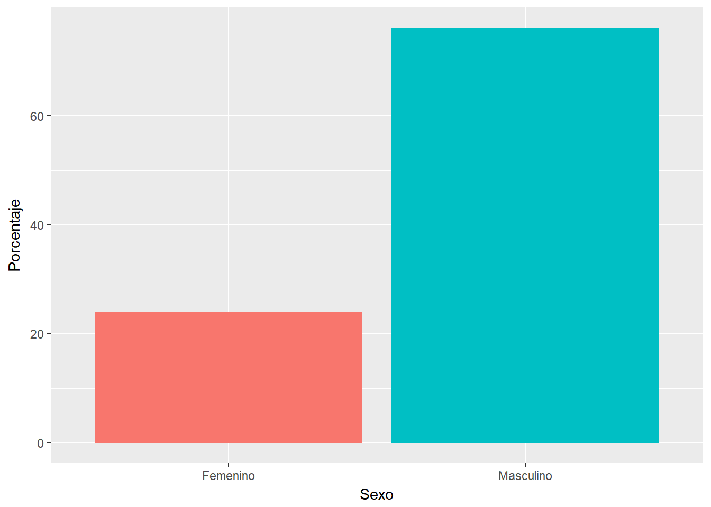
- Procedencia: los pacientes provinieron de diferentes ciudades: Asunción, 24%; Fernando de la Mora, 19%; San Lorenzo, 14%; Ñemby, 9%; Lambaré, 5%; Luque, 10%; y 19%, de otras ciudades.
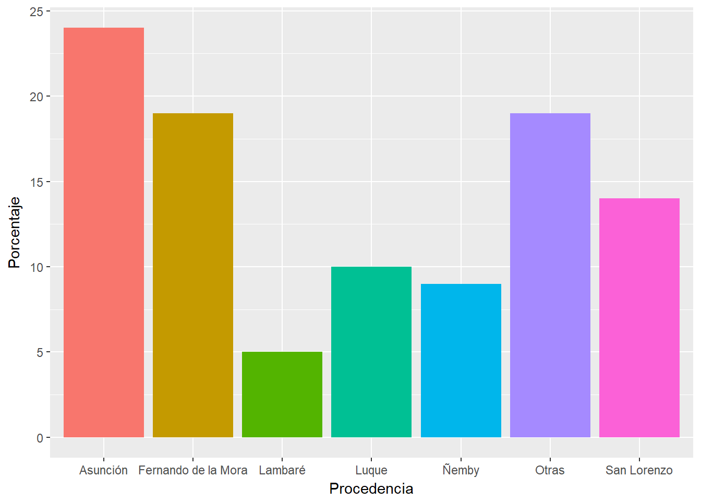
- Hospital de nacimiento: Hospital San Pablo (HSP), 52%; Hospital Materno Infantil de San Lorenzo (HMISL) e Instituto de Previsión Social (IPS), 9%; Cruz Roja (CR), 10%; Hospital de Limpio (HL), Hospital Nacional de Itaugua (HNI), Hospital Regional de Pedro Juan Caballero (HPJC), y Hospital de Barrio Obrero (HBO), 5%.
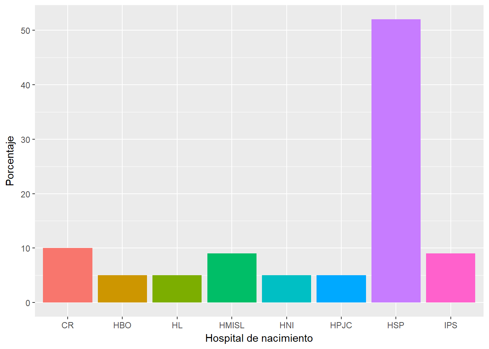
- Vía de nacimiento: por cesárea nacieron el 81%, y por parto vaginal el 19% de los pacientes.
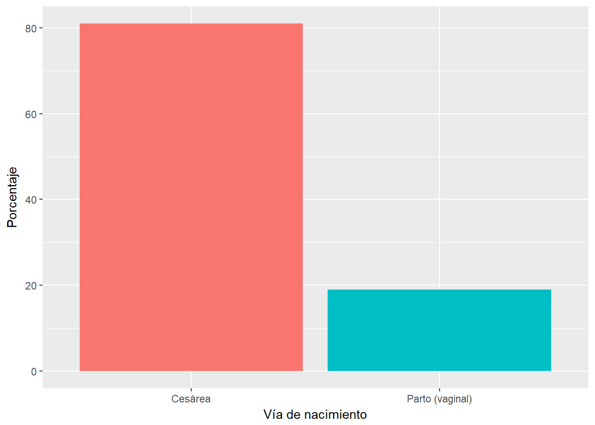
- Periodo gestacional: 27-28 semanas, 10%; 29-31 semanas, 38%; 32-34 semanas, 33%; y 35-37 semanas, 19%.
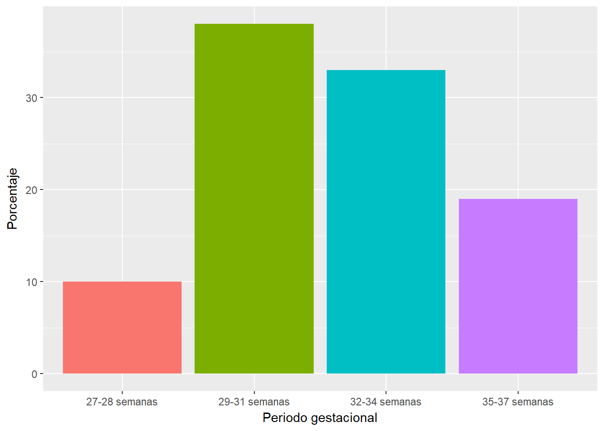
- Edadde los pacientes evaluados: el 29% tiene de 2 a 5 meses; el 38% de 6 a 9 meses ; 19% tiene de 10 a 13 meses y el 14% tiene entre 14 y 18 meses.
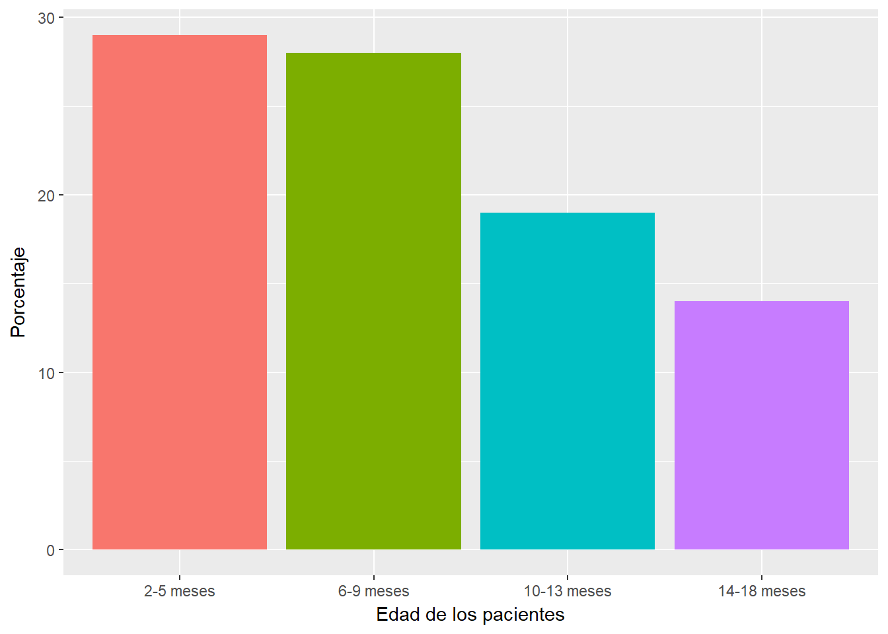
- Edad corregida los pacientes evaluados: En cuanto a la edad corregida, encontramos lo siguiente: de 0 a 4 meses, 48%; de 5 a 9 meses, 38%; de 10 a 14 meses, el 5%; y entre 15 a 19, el 9%.
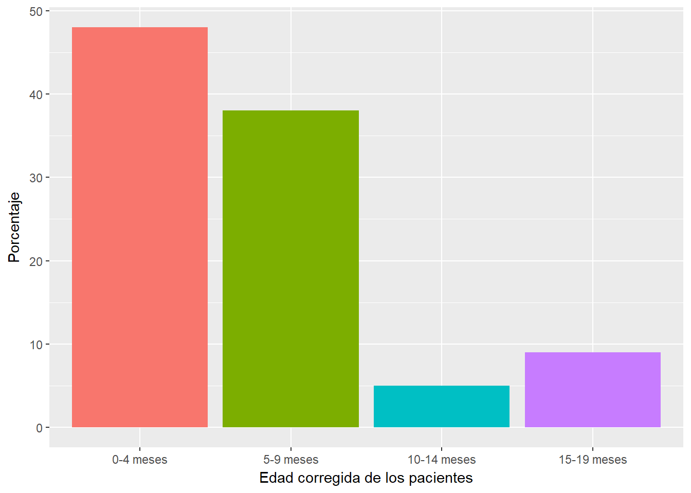
- De acuerdo al peso con el que nacieron: fue de 850 a 1350 g en el 43%; de 1351 a 1850 g en el 33%; de 1851 a 2350 g en el 9%; de 2351 a 2850 g en el 10%; y de 2851 a 3350 gr en el 5%.
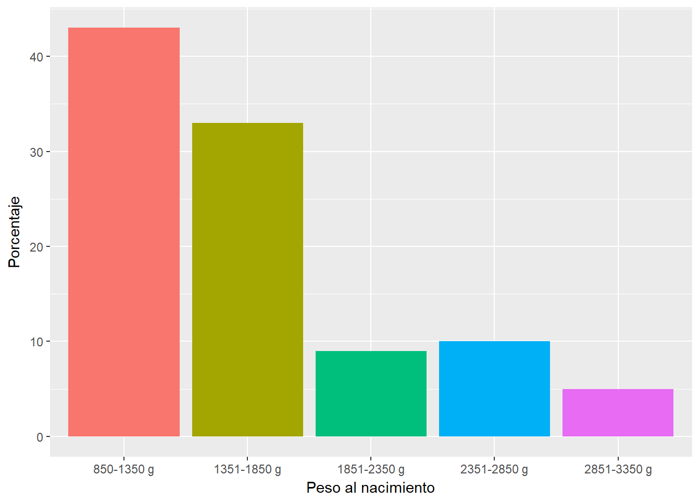
- Según la evaluación kinésica: en la primera sesión de fisioterapia encontramos los siguientes diagnósticos: prematurez, 67%; retraso en el desarrollo, 9%; síndrome de Down, 10%; prematurez y retraso motor, 9%; y prematurez e hipotonía, 5%.
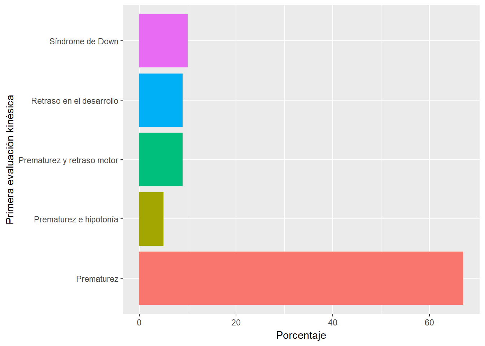
- De acuerdo al diagnóstico médico: determinamos lo siguiente: el 5% presentó una infección hospitalaria; síndrome de distrés respiratorio, el 9%; retraso psicomotor, el 29%; encefalopatía, el 14%; enfermedad de la membrana hialina, el 14%; hemorragia intracraneal, el 5%; ventriculomegalia bilateral, el 5%; HIV grado III, el 9%; síndrome de Down, el 9%.
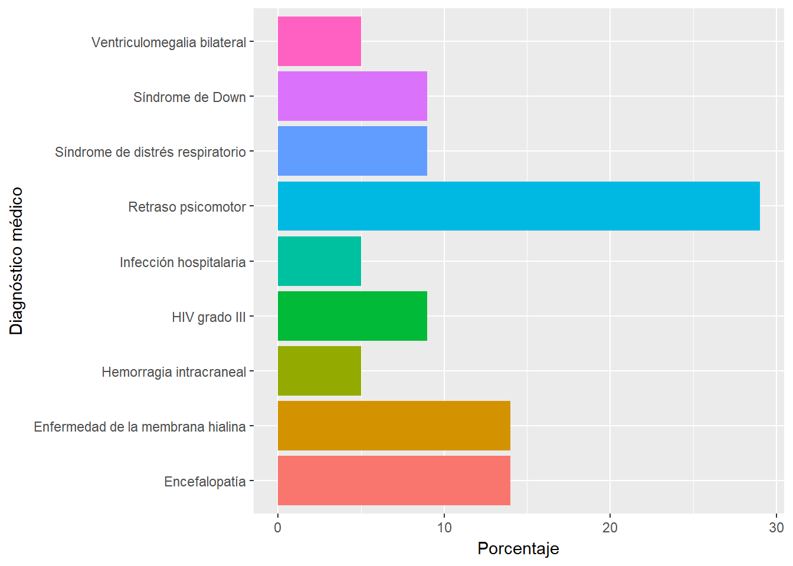
- Terapias que realizan los prematuros: fueron las siguientes: sólo fisioterapia (FT), 38%; fisioterapia y estimulación temprana (FT + ET), 38%; fisioterapia, estimulación temprana y fonoaudiología (FT + ET + FA), 5%. Los pacientes que iniciaron la fisioterapia alcanzó el 19%.
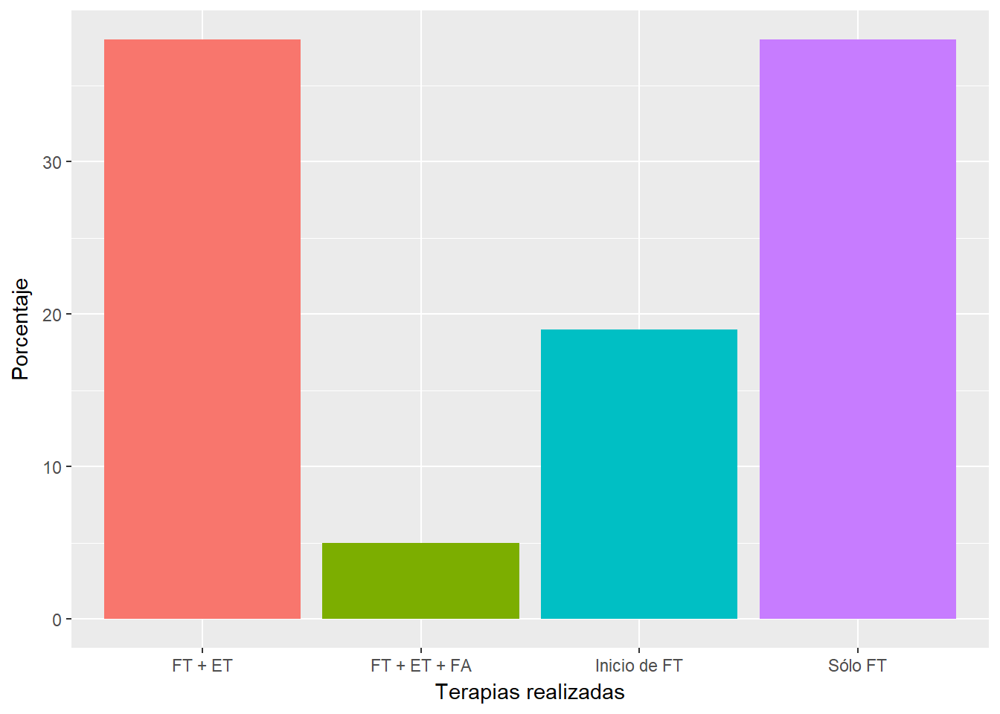
- Probabilidades de secuela según la escala de Brunet-Lezine, de acuerdo a la edad real: el 38% del total de los pacientes evaluados presentó un desarrollo de acuerdo a su edad real y el 62% presentó retraso psicomotriz.
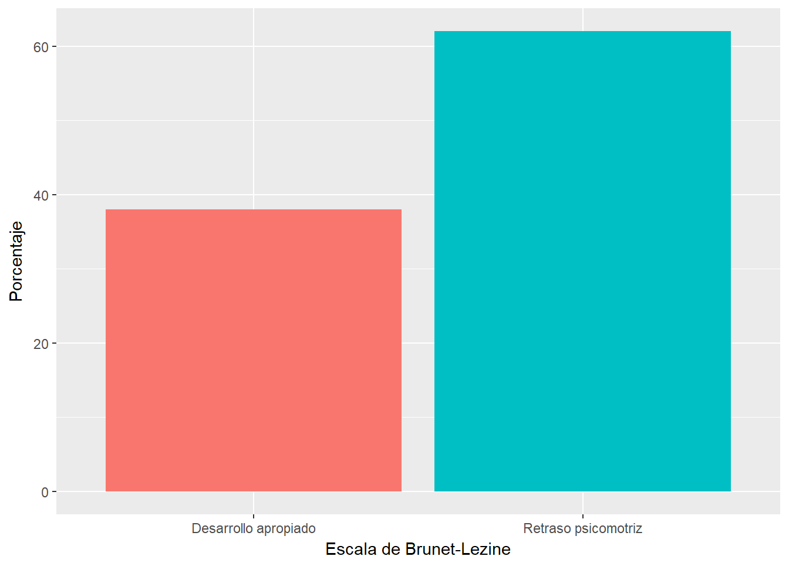
- Probabilidades de secuela según la escala de Brunet-Lezine, de acuerdo a la edad corregida: el 86% presentó un desarrollo normal, y el 13% presentó un retraso psicomotriz.
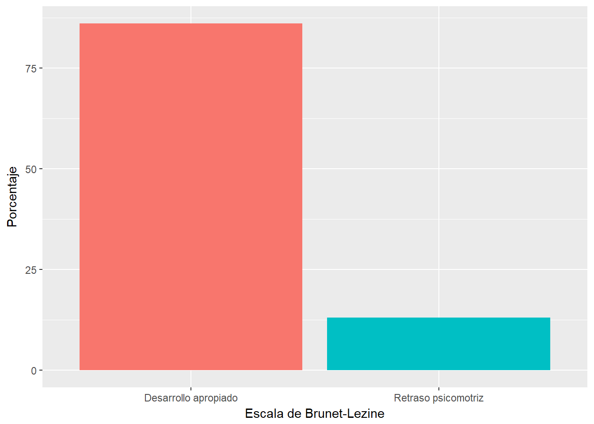
- Comparación de la edad real con la edad de desarrollo a través de las semanas de gestación: en los pacientes nacidos entre las semanas 27 y 28 de gestación tenemos que el 50% está con un desarrollo de acuerdo a su edad real, y otro 50% presenta un retraso en su desarrollo; dentro del grupo de pacientes nacidos entre las semanas 29 y 31, el 13% tiene un desarrollo normal, y el 87% se encuentra con retraso motor; de los nacidos entre 32 y 34 semanas de gestación el 71% tiene un desarrollo normal, y el 29% presenta un retraso motor; entre las semanas 35 y 37 el 25% tiene un desarrollo normal y el 75% presenta retraso psicomotor.
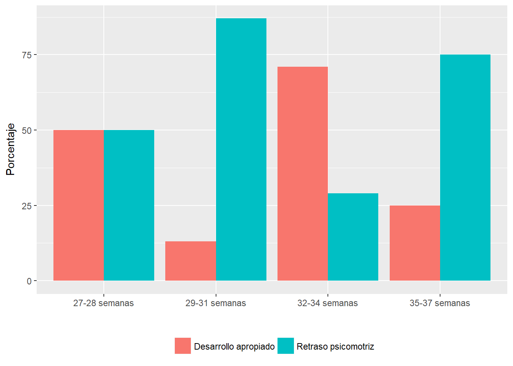
- Relación del tratamiento que realiza el paciente con la edad real: de los pacientes que realizan solamente fisioterapia (FT) el 37% tiene un desarrollo normal, y el 63% presenta retraso psicomotor; de los que realizan fisioterapia y estimulación temprana (FT + ET) obtuvimos lo siguiente: Sin retraso el 50%, y pacientes con retraso 50%; de los que inician con la fisioterapia: el 25% tiene un desarrollo normal y el 75% presenta retraso. y de los que realizan fisioterapia, estimulación temprana y fonoaudiología (FT + ET + FA) el 100% tiene retraso motor.
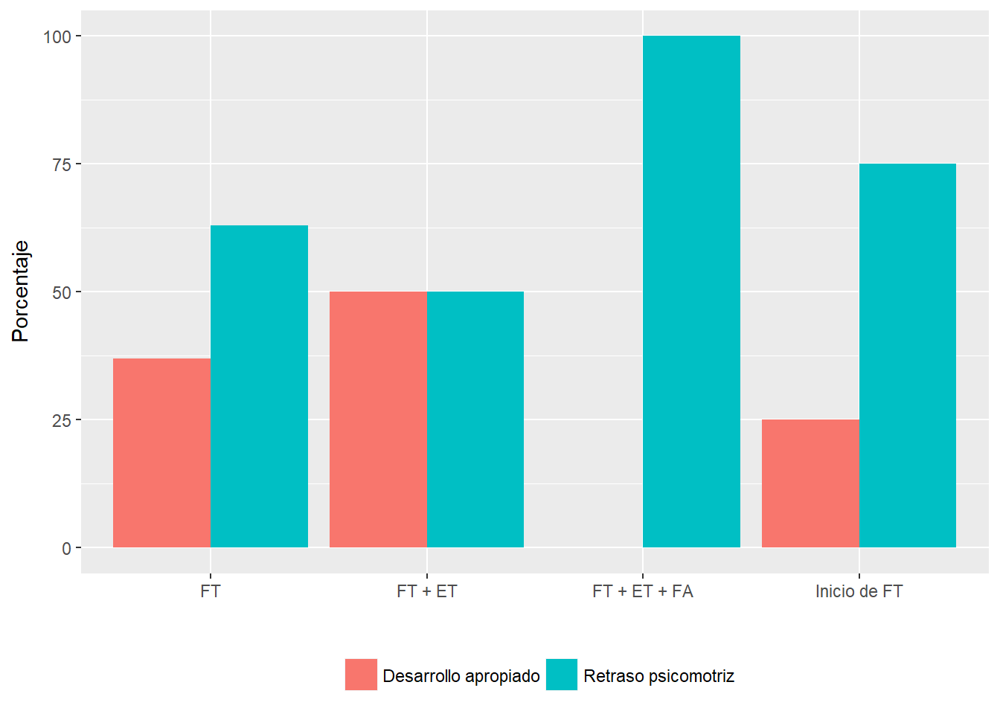
- Relación entre el peso al nacer y la edad real: de 850 a 1350 g, tenemos que el 22% tiene un desarrollo normal, y el 78% presenta retraso en el desarrollo; de los que pesaron de 1351 a 1850 g, tenemos que el 57% tiene un desarrollo normal, y el 43% presenta retraso; de los que pesaron de 1851 a 2350 g tenemos que el 50% tiene un desarrollo normal, y el 50% está con retraso motor; de los pacientes nacidos con un peso entre 2351 a 2850 g el 50% tiene un desarrollo normal, y otro 50% presenta un retraso motor; y del grupo comprendido de 2851 a 3350 g tenemos que el 100% presenta retraso motor.

- Comparación de la edad de desarrollo con la edad corregida a través de la edad gestacional: de los pacientes nacidos entre las 27 y 28 semanas de gestación, tenemos que el 50% tiene un desarrollo normal, y el otro 50% tiene retraso en el desarrollo; de los nacidos entre las semanas 29 a 31 de gestación, el 88% tiene un desarrollo normal y el 12% tiene retraso en el desarrollo; de los nacidos entre las 32 a 34 semanas de gestación, tenemos que el 100% tiene un desarrollo normal y no hay ningún porcentaje con retraso; y de los nacidos entre 35 a 37 semanas, el 75% tiene desarrollo normal y el 25% tiene retraso.
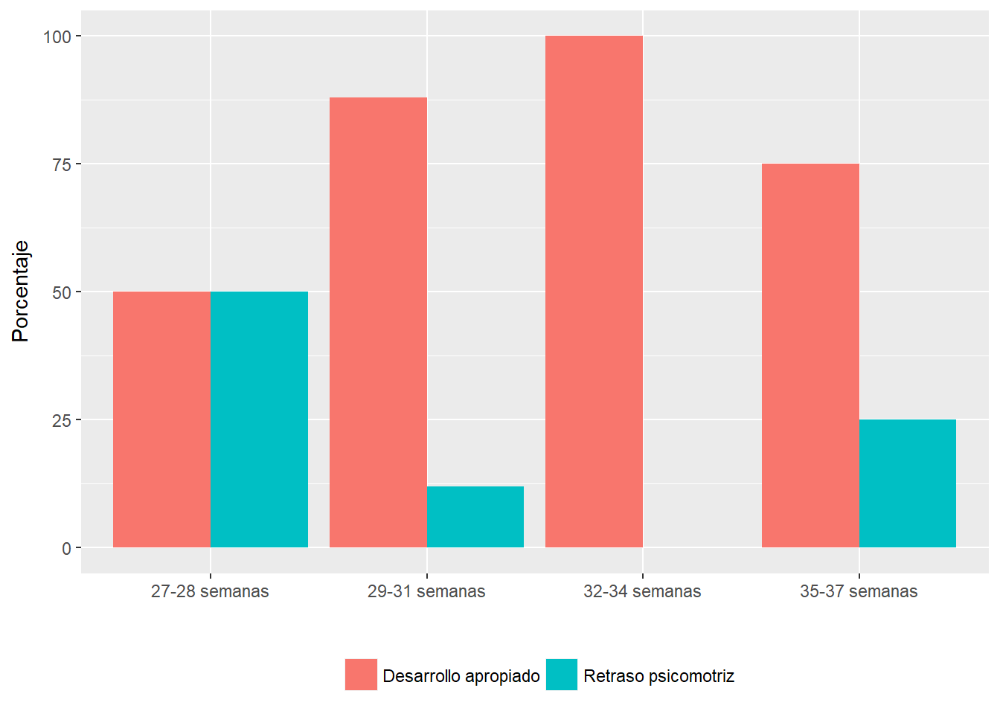
- Relación de tratamiento realizado con la edad corregida: el 100% de los pacientes que realizan fisioterapia (FT) tienen un desarrollo normal para su edad; de los que realizan fisioterapia y estimulación temprana (FT + ET), el 75% tiene un desarrollo normal y el 25% está con retraso; del grupo de pacientes que iniciaron fisioterapia, el 75% tiene desarrollo normal y el 25% presenta retraso; y el 100% perteneciente al grupo que realiza fisioterapia, ET y fonoaudiología (FT + ET + FA) presenta un desarrollo normal.
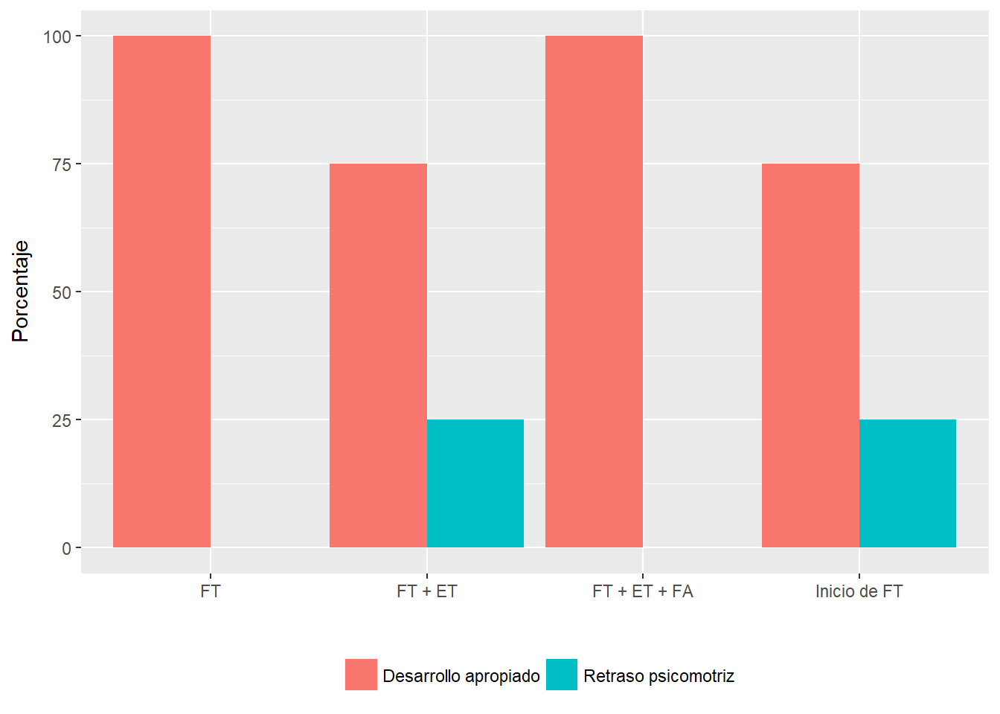
- Relación entre el peso al nacer y la edad corregida: de 850 a 1350 g, el 78% tiene un desarrollo normal y el 22% tiene retraso en el desarrollo; de 1351 a 1850 g, el 100% presenta un desarrollo normal; de 1851 a 2350 g, el 50% tiene un desarrollo normal y otro 50% presenta un retraso psicomotor; de 2351 a 2850 g, el 100% presenta un desarrollo normal, y del grupo que nacieron con un peso entre 2851 y 3350 g, el 100% tiene desarrollo normal.
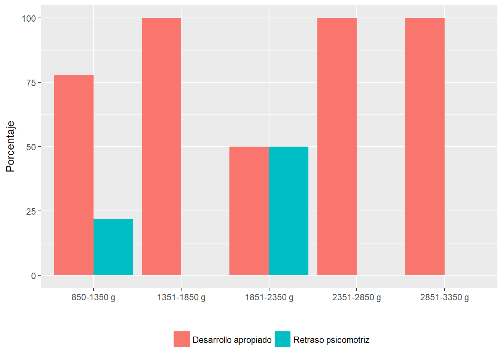
- Comparación del tipo de parto con la edad de desarrollo motor: del total de pacientes nacidos por cesárea el 44% presenta un desarrollo global normal y el 56% presenta retraso psicomotor; y al observar los pacientes nacidos por parto vaginal tenemos que el 20% de estos pacientes tiene un desarrollo normal y el 80% presenta retraso psicomotor.
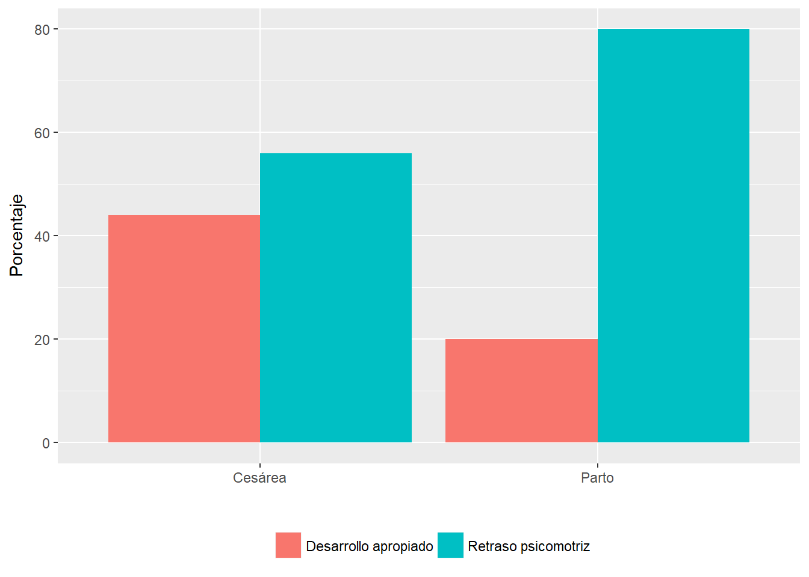
Observando la tabla de la comparación entre la edad real, edad de desarrollo y la edad corregida, vemos la diferencia existente entre estas tres edades existentes al trabajar con la Escala de Brunet-Lezine (Tabla 1).
| Paciente | Edad real | Edad de desarrollo | Edad corregida |
|---|---|---|---|
| Paciente 1 | 8 | 8.6 | 6 |
| Paciente 2 | 12 | 13.8 | 9 |
| Paciente 3 | 6 | 6 | 4 |
| Paciente 4 | 6 | 4.8 | 3 |
| Paciente 5 | 14 | 9.7 | 11 |
| Paciente 6 | 9 | 7.7 | 8 |
| Paciente 7 | 9 | 9.2 | 7 |
| Paciente 8 | 17 | 17.7 | 15 |
| Paciente 9 | 4 | 2.5 | 1 |
| Paciente 10 | 7 | 8 | 6 |
| Paciente 11 | 6 | 4.6 | 3 |
| Paciente 12 | 6 | 3 | 3 |
| Paciente 13 | 18 | 14.7 | 18 |
| Paciente 14 | 11 | 10.4 | 9 |
| Paciente 15 | 2 | 1.1 | 1 |
| Paciente 16 | 2 | 1.3 | - |
| Paciente 17 | 4 | 1.3 | 2 |
| Paciente 18 | 4 | 4.6 | 4 |
| Paciente 19 | 13 | 18.3 | 9 |
| Paciente 20 | 11 | 10.3 | 9 |
| Paciente 21 | 2 | 1 | 1 |
Observando la tabla de desarrollo según la Escala de Brunet se observan a los 21 pacientes y sus edades de acuerdo a cada una de las áreas que abarca la escala: P: control postural y motricidad; C: coordinación óculo-motriz y conducta de adaptación a los objetos; L: lenguaje y por ultimo S: sociabilidad o relaciones sociales y personales (Tabla 2).
| Paciente | Categoria P | Categoría C | Categoría L | Categoría S |
|---|---|---|---|---|
| Paciente 1 | 8.0 | 8.0 | 9.0 | 9.0 |
| Paciente 2 | 15.0 | 14.0 | 15.0 | 14.0 |
| Paciente 3 | 7.0 | 6.0 | 5.0 | 7.0 |
| Paciente 4 | 4.0 | 4.0 | 7.0 | 5.0 |
| Paciente 5 | 9.0 | 9.0 | 12.0 | 10.0 |
| Paciente 6 | 6.0 | 8.0 | 7.0 | 8.0 |
| Paciente 7 | 9.0 | 9.0 | 10.0 | 9.0 |
| Paciente 8 | 19.0 | 17.0 | 16.0 | 18.0 |
| Paciente 9 | 1.0 | 2.0 | 4.0 | 3.0 |
| Paciente 10 | 8.0 | 8.0 | 7.0 | 8.0 |
| Paciente 11 | 4.0 | 4.0 | 7.0 | 0.8 |
| Paciente 12 | 0.8 | 3.0 | 3.0 | 3.0 |
| Paciente 13 | 16.0 | 13.0 | 16.0 | 15.0 |
| Paciente 14 | 10.0 | 9.0 | 12.0 | 12.0 |
| Paciente 15 | 1.0 | 1.0 | 0.3 | 1.0 |
| Paciente 16 | 1.5 | 1.5 | 1.0 | 1.0 |
| Paciente 17 | 1.5 | 1.0 | 1.0 | 1.4 |
| Paciente 18 | 4.4 | 5.0 | 6.0 | 4.0 |
| Paciente 19 | 22.0 | 17.0 | 18.0 | 18.0 |
| Paciente 20 | 11.0 | 9.3 | 10.0 | 12.0 |
| Paciente 21 | 1.0 | 1.0 | 1.0 | 0.3 |
Discusión
De los resultados obtenidos se observa una gran incidencia de niños con retraso global del desarrollo. Al analizar de forma más detallada dicho retraso y las características de los niños que lo padecen, concordamos al igual que otros autores (Bosch Mitjans) en el alto riesgo que supone para un recién nacido a pretérmino en relación a su desarrollo motor normal presentar un bajo peso al nacer, sobre todo si es menor a 1.500 g y/o una edad gestacional menor a 32 semanas.
Dado que el desarrollo intrauterino tiene un orden cronológico para la evolución de los distintos sistemas, la inmadurez de éstos hace más complejo el trabajo de adaptación que debe realizar el recién nacido a pretérmino para enfrentar un nuevo ambiente. Es así como los recién nacidos de término desde el momento de nacer comienzan a adaptarse al medio ambiente y cumplen de manera normal los hitos del desarrollo, mientras que los recién nacidos a pretérmino necesitan más tiempo y adecuada estimulación para lograr la madurez necesaria y recién en ese momento, comenzar una adecuada adaptación al medio y lograr un buen DSM (Bosch Mitjans).
De esto se entiende que la evaluación en los niños de alto riesgo es crucial para detectar posibles alteraciones futuras y dar el máximo de beneficios potenciales, debido a que los periodos de mayor plasticidad neuronal se ubican entre los dos a tres meses antes de la edad de término y seis a ocho meses después de ésta (Monge Albarado). Al hablar de los resultados concluimos que al comparar su edad real, de maduración y corregida existen cambios o diferencias muy significativas, pues si observamos detenidamente a cada uno de los pacientes en forma individual la mayoría coincide su edad madurativa con su edad corregida, a diferencia de con la edad real que es la que posee desde el día de su nacimiento.
Coincidimos también que la Evaluación de Brunet-Lezine tiene 4 áreas y al comparar (Bosch Mitjans) observamos que los recién nacidos a pretérmino con bajo peso al nacer poseen menor puntuación en los mismos así como también los de menor edad gestacional. Tanto los pacientes nacidos por parto vaginal como por parto cesárea nacidos a pretérmino en mayor porcentaje poseen, al analizar la evaluación, retraso global en el desarrollo psicomotor.
Conclusión
Como conclusiones de la evaluación realizada en el presente trabajo pueden destacarse las siguientes:
- De acuerdo a la Escala de Brunet-Lezine observamos que la mayoría de los pacientes prematuros poseen un retraso en el desarrollo psicomotriz al comparar su edad real con la madurativa; y al comparar con la edad corregida tenemos que la mayoría de los pacientes tienen un desarrollo normal, eso se debe a que el significado de la edad corregida es la edad que el niño nacido pretérmino habría tenido si hubiera nacido en la fecha de parto estimada inicialmente.
- En cuanto al sexo de los nacidos a pretérmino observamos que la mayoría son de sexo masculino.
- La secuela más vista entre los pacientes evaluados en el consultorio de Fisioterapia presentan retraso global psicomotor.
- Observamos que la mayoría proviene de la Ciudad de Asunción y nacieron en el Hospital Materno Infantil San Pablo.
- El mayor porcentaje de los pacientes nacidos pretérmino tanto, por parto cesárea como por vaginal, presenta retraso psicomotor.
Recomendación
Sería necesario que utilicen las diferentes escalas de evaluación de desarrollo lo más tempranamente posible, para así detectar, las posibles alteraciones en el desarrollo que tendría el niño y apoyar a su mejor calidad de vida y el de su familia.
Trabajos citados
- Blanco ME. Desarrollo Psicomotor en Niños Menores de un Año con Antecedentes de Encefalopatía Hipóxica Isquémica. Barquismeto: Universidad Centroccidental, 2003. Impreso.
- Bosch Mitjans V, Rodríguez del Valle J. Estudio del Desarrollo Psicomotor de Prematuros Extremos del Área Oriente de la Región Metropolitana que Recibieron Tratamiento Kinésico. Chile, 2007. Impreso.
- Camacho Salas A, Pallas-Alonso CR, de la Cruz-Bértolo J, Simón de las Heras R, Mateos Beato F. “Parálisis Cerebral: Concepto y Registros de Base Poblacional.” Rev Neurol 45.8 (2007): 503-508. Impreso.
- Camilieri MM. “Toxina Botulínica y Fisioterapia en Parálisis Cerebral Infantil.” Rev Fisioter 5.1 (2006): 19-26. Impreso.
- Ferré Veneciana J, Ferré Rodríguez M. El Desarrollo Neuro-Senso-Psicomotriz de los 3 Primeros Años de Vida. España: Ed. Lebón, 2005. Impreso.
- Ferreira A. Instrucciones Para la Aplicación del Test de Brunet-lezine Desde El Nacimiento. Centro Cerena, 2002. Impreso.
- García Navarro, Tacoronte M, Sarduy I, et al. “Influencia de la Estimulación Temprana en la Parálisis Cerebral.” Rev Neurol 31.8 (2000): 716-719. Internet.
- Malagon Valdez J. “Parálisis Cerebral.” Medicina 67.6/1 (2007): 586-592. Impreso.
- Monge Albarado M, Meneses Montero M. Instrumentos de Evaluación del Desarrollo Motor. Impreso.
- Papazian O, Alfonso I. “Rehabilitación Motora de los Niños con Parálisis Cerebral.” Rev Neurol Clin 2.1 (2001): 236-248. Internet.
- Pascual JM, Koenigsberger MR. “Parálisis Cerebral: Factores de Riesgo Prenatales.” Neurología 37 (2009): 275-280. Impreso.
- Piana Román A, Viñals Labadiño C, Del Valle Cabrera MG et al. “Evaluación Neuromotora de Pacientes con Parálisis Cerebral Espástica Tratados con Cirugía Ortopédica en el Instituto Nacional de Rehabilitación.” Acta Ortopédica Mex 24.5 (2010): 331-337. Internet.
- Ramírez Flores M, Ostrosky Solís F. “Atención y Memoria en Pacientes con Parálisis Cerebral Infantil.” Rev Neuropsicología, Neuropsiquiatría y Neurociencias 9.1 (2009):55-64. Impreso.
- Rebage V, Ruiz-Escusol S, Fernández-Vallejo M. “El Recién Nacido Neurológico en Nuestro Medio y su Seguimiento.” Rv Neurología (Barc) 47.Suppl1 (2008): S1- S13. Impreso.
- Sánchez Blasco I, Ferrero Méndez A, Aguilar Naranjo JJ, Climent Barberá JM, Conejero Casares JA et al. “Manual SERMEF de Rehabilitación y Medicina Física.” En: Toledo Gonzales M, Editor. Fundamentos en la Parálisis Cerebral. Impreso.
- Weitzman M. “Terapias de Rehabilitación en Niños con o en Riesgo de Parálisis Cerebral.” Rev Ped Elec Chile 2.1 (2005): 47-50. Impreso.
Facultad de Ciencias de la Salud, Universidad del Norte↩